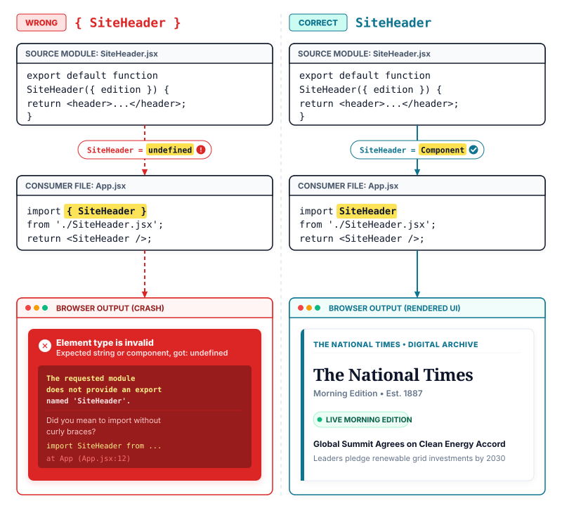

Lecture 1: Declarative Components versus Manual DOM
Imagine this scenario:
A reader logs into their account on the National Times website.
The page displays that reader's name in ten different places across the screen.
The reader changes their account name from Alex to Morgan and clicks save.
Your code searches through the page and rewrites nine places, but misses the tenth place in the header.
Why does the tenth spot still display the old name?
The new name exists in memory, but one forgotten spot on screen never received the update.
Today you learn how React keeps every spot on screen matched to your data automatically.
The Fragility of Manual DOM Scripting
On any content website like The National Times, user data appears across many independent sections at once. When a subscriber logs into the site, their name appears in the top navigation greeting, in the subscription status badge, in the comment box, and in the account drawer. In traditional JavaScript development, keeping all ten locations accurate requires you to write manual browser commands for each spot. When the reader renames their account, your script must locate every single HTML element on the page and rewrite its text content by hand.
To understand why this approach fails at scale, consider what that manual script actually looks like in practice. You write selectors such as document.getElementById('greeting-text') and document.querySelector('.masthead-user'). You assign the new name directly to the textContent property of each element. If your page has ten places showing that name, you write ten separate queries and ten separate assignments.
What if you package those ten steps inside a single update function? That helper function works until another developer adds an eleventh name badge on a breaking news alert, or renames an element ID in the HTML markup. The browser does not warn you that an update was missed. Instead, document.getElementById returns null, the browser throws a silent error or skips the line, and the tenth element keeps displaying the old name. The subscriber sees "Morgan" in their profile drawer, but the top header still greets them as "Alex". Your application state has drifted apart: the computer memory holds the new name, but the live webpage still shows the old text.
This failure reveals the core problem of imperative DOM scripting (the programming style where you write explicit, step-by-step commands instructing the browser exactly how to find and mutate each individual document node). Imperative code acts like a passenger giving turn-by-turn driving directions: turn left, drive two hundred meters, turn right, and stop. If the passenger forgets one turn, the car ends up in the wrong neighborhood. In web applications, if your imperative script misses one DOM node, the screen shows incorrect data.
React was created to eliminate this category of bugs entirely. Instead of forcing you to write imperative instructions that manually mutate individual browser elements, React introduces a declarative programming model (a design paradigm where you describe what the user interface should look like for a given state, rather than how to manipulate the screen step by step).
When you write plain JavaScript DOM code, your script is an instruction manual for the browser: find this node, verify that it exists, overwrite its text, and attach an event listener. React reverses this relationship. Instead of telling the browser how to modify the document over time, you write a function that receives data and returns a description of the completed interface. You provide the destination address, and React takes care of the navigation.
Because your code only describes the finished screen for any given value, there is no list of manual DOM queries to maintain. If the reader's name changes from Alex to Morgan, you do not hunt down ten DOM elements. You simply supply the new name to React. React evaluates your description, figures out what changed, and updates every visible spot on the screen automatically.
Components as Reusable Blueprints
In plain HTML, you structure documents using built-in elements like <header>, <article>, and <button>. However, native HTML tags do not know anything about your application logic, your subscriber tiers, or your reader data. Traditionally, developers had to copy and paste chunks of HTML structure across templates and attach separate JavaScript scripts to add behavior.
To solve this fragmentation, React combines markup, style, and logic into a single cohesive structure. This mechanism is called a component (a self-contained, reusable JavaScript function that accepts data inputs called props and returns markup describing a piece of the user interface).
In React, every component is a standard JavaScript function whose name starts with a capital letter. Capitalization is a strict requirement: it tells React that <Masthead /> is your custom component, whereas <header> is a built-in browser DOM tag. Components can be nested inside one another, allowing you to assemble complex pages out of small, focused building blocks.
To see this in action on The National Times, we can organize our masthead into three distinct files. The container component Masthead.jsx acts as the visual shell. Inside it, we place two specialized child components: ReaderGreeting.jsx, which renders the welcome badge, and AccountBadge.jsx, which renders the subscriber profile details. Both child components receive readerName as an input prop from their parent.
national-times — Component Explorer
MastheadreaderName="Morgan"
ReaderGreetingreaderName="Morgan"
Welcome back, Morgan
AccountBadgereaderName="Morgan"
Subscriber: MorganPlan: All-Access
The component explorer panel above illustrates this relationship. On the left, the file hierarchy shows Masthead.jsx containing both ReaderGreeting.jsx and AccountBadge.jsx. On the right, the rendered canvas displays the final visual output: the greeting badge displays "Welcome back, Morgan", while the account card displays "Subscriber: Morgan" alongside the subscription plan. The reader name "Morgan" flows directly from the parent container into both child components. Neither child queries the DOM; each merely returns a description of its own HTML elements.
If our component functions never touch the browser DOM, how does the screen actually change when data updates?
When Morgan edits their account name to Taylor, the Masthead component runs again with the new name. How should the browser update? A naive approach would be to wipe out the existing HTML inside the page container and replace it entirely with fresh markup. However, destroying and recreating physical DOM nodes has disastrous side effects: any active input field loses keyboard focus, text selections disappear, CSS animations restart abruptly, and performance degrades rapidly on complex pages.
React avoids this destruction through an intelligent comparison mechanism. This process is called reconciliation (the diffing algorithm React uses to compare two trees of React elements and calculate the minimal set of real DOM operations needed to sync the screen).
When your component executes, React creates a lightweight tree of JavaScript objects representing the intended HTML structure. This tree is an in-memory description of the UI, often referred to as the virtual DOM. When data changes, React executes your components again to generate a new element tree. It then diffs the new tree against the previous tree.
During reconciliation, React discovers that the <header>, <h1>, and surrounding <div> wrappers are identical in type and structure. The only differences are the specific text nodes containing the reader's name. React leaves every surrounding DOM node completely untouched and surgically updates only the text content inside the greeting span and the subscriber paragraph.
Where you will meet this
News masthead user profiles: updating a subscriber name or tier immediately syncs the top navigation, the comment author label, and the sidebar account badge without querying element IDs.
E-commerce shopping carts: clicking an item count button updates the cart flyout total, the header badge counter, and the checkout summary from a single data source.
Social media feeds: liking a published post increments the heart counter on the feed card and updates the analytics drawer simultaneously.
Media player dashboards: pausing a podcast track toggles the icon inside the main playback bar, the mini player in the corner, and the system notification panel together.
Summary
Declarative State Projections vs Imperative DOM Mutations
In daily production, choosing between imperative DOM manipulation and declarative React components defines how you structure user interfaces. While manual scripting requires micromanaging every element update, React lets you declare the desired target state and handles the mutations automatically. Here is your streetwise review.
❒ Imperative versus Declarative Mental Models
Avoid manual DOM queries and imperative mutations to keep state synchronized across your interface. DO NOT DO THIS: Manually querying elements and mutating properties leads to state drift and broken references when IDs change.
const badge =
document.getElementById('status-badge');
badge.textContent = 'Active';
badge.classList.add('live');
DO THIS: Declare UI as a pure projection of data, letting React handle DOM updates when inputs change.
functionStatusBadge({ isActive }) {
return (
<span className={isActive ? 'live' : 'idle'}>
{isActive ? 'Active' : 'Offline'}
</span>
);
}
Prevent state divergence by maintaining a single declarative source of truth. DO NOT DO THIS: Storing state across multiple disparate DOM elements requires synchronized manual mutations that easily fail.
DO THIS: Pass state into reusable component blueprints that recalculate their output automatically.
functionDistrictCounter({ count }) {
return <p>Affected districts: {count}</p>;
}
❒ Reconciliation and Encapsulation
React components encapsulate markup, styles, and logic into isolated building blocks. DO THIS: Compose independent components to build complex views without leaking implementation details.
functionHeader() {
return (
<header>
<StatusBadge isActive={true} />
<DistrictCounter count={3} />
</header>
);
}
➔ NEVER query or mutate physical DOM nodes manually inside React applications.
➔ ALWAYS declare the target UI state and let React reconcile changes to the real DOM.
➔ IF multiple interface elements depend on the same data THEN project that data through declarative component props.
VANILLA JS (Manual DOM)
REACT (Declarative Components)
Mental model
Step-by-step instructions on how to mutate the DOM
Blueprint describing what the UI should look like for given data
DOM updates
Manual queries and property assignments on each node
Automated reconciliation diffs element trees and updates the DOM
State consistency
High risk of drift between JavaScript variables and screen nodes
Single source of truth where the screen is a pure projection of data
Code organization
Scattered DOM selectors and mutation scripts across files
Reusable, self-contained components combining markup and behavior
Maintenance burden
Renaming an element ID breaks updates silently across scripts
Explicit props and component boundaries keep contracts clear and isolated
Lecture 2: Creating a Project: Framework versus Build Tool
Imagine this scenario:
A web developer prepares to build an election tracker for the National Times website. The tracker counts votes from fifty precincts, because voters need certified county totals tonight.
The page must display one total precinct percentage. That percentage tracks fifty certified precinct counts, because voters need certified county totals tonight.
The developer opens the terminal program to generate the new React project.
The official documentation recommends a full-stack framework, but online tutorials recommend a simple build tool.
Which tool should the developer run to start the application?
Picking the wrong foundation means rewiring page routing, data loading, and server delivery by hand under deadline pressure.
Today you learn what commands generate a modern React project and how to choose the right foundation.
The Evolution of the React Starting Point
Starting a modern React application requires more than linking a script inside an HTML document. React components rely on JSX syntax and modular file imports that web browsers cannot parse directly without compilation. For many years, the standard way to begin was a utility called Create React App. However, Create React App is now officially deprecated and unmaintained. It produced heavy Webpack configurations, slow local reload cycles, and provided no path toward modern React capabilities such as streaming HTML or React Server Components.
Today, starting a React project requires making an early architectural decision between two distinct paths. You can start with a standalone client build tool such as Vite, or you can start with a full-stack framework such as Next.js or React Router. Understanding the difference between these two approaches determines how your code compiles, how your pages load, and how your application scales.
The Build Tool Route: Fast Client Bundling
When you want to build a focused client-side interface, the most direct approach is to use a modern build tool. In web development, a build tool (a command-line development program that compiles, bundles, and serves application code for the browser) takes your JSX files, resolves your import statements, and outputs optimized JavaScript that any browser can run.
The modern standard for standalone React projects is Vite. Vite replaces older, slower bundlers by leveraging native browser ES modules during development and using Rollup for production builds.
To generate a new React project with Vite, the developer runs a single scaffolding command in the terminal:
When this command completes, Vite generates a minimal project structure on your computer. It creates an index.html file at the root of the project, a package.json file specifying your dependencies, a vite.config.js file configuring the React compiler plugin, and a src directory containing your first components.
Running npm run dev spins up a local web server, typically at http://localhost:5173. When you edit a component file, Vite uses Hot Module Replacement to update that single component in the browser instantly without refreshing the entire webpage.
To see how our election tracker organizes its components inside this Vite project, we structure our interface into three distinct files. The container component ElectionApp.jsx acts as the visual shell. Inside it, we place PrecinctHeader.jsx to display the county name and reporting progress, and VoteCounter.jsx to render the certified vote tallies.
election-tracker — Component Explorer
ElectionAppcounty="Oakland"
PrecinctHeadercounty="Oakland"
Oakland County50 of 50 Precincts Reporting
VoteCountertotalVotes={482910}
Total certified votes: 482,910Lead: 52.4%
The component explorer panel above displays this hierarchy. On the left, the file tree shows ElectionApp.jsx holding both child components. On the right, the rendered canvas shows the resulting interface: the header displays "Oakland County" with "50 of 50 Precincts Reporting", while the counter displays the certified total of 482,910 votes.
Here is the implementation of PrecinctHeader.jsx:
PrecinctHeader.jsx
1exportdefaultfunctionPrecinctHeader({ county }) {
While Vite offers a fast development workflow, it builds a Single-Page Application (SPA) that relies entirely on client-side rendering (CSR) (the rendering pattern where the browser downloads a blank HTML document and builds the entire interface locally using client JavaScript).
When a reader visits our election tracker built with Vite, the web server returns an almost blank HTML document containing an empty <div id="root"></div> and a script tag referencing the application entry file.
For an internal dashboard, this empty shell is acceptable. But for a public newsroom election tracker, client-side rendering creates severe obstacles:
The Blank Screen Delay: On slow mobile cellular networks, the reader must download the HTML, download the bundled JavaScript, parse the code, and execute React before seeing any content. Until that process finishes, the screen remains completely blank.
Search Engines and Social Cards: Search engine crawlers and social media link scrapers expect complete HTML. If they inspect an empty root container, they cannot index tonight's vote count or generate rich link previews with candidate names.
Data Fetching Waterfalls: In a pure client app, components must mount before they can trigger network requests for data. This creates sequential delays: download code, mount component, fetch votes, re-render screen.
Missing Routing Architecture: Vite does not include a router. If the National Times needs dedicated URLs for different precincts, the developer must research, install, and configure an external routing library manually.
The Framework Route: Full-Stack Architecture
To solve these production limitations, the official React documentation recommends starting with a full-stack framework. A full-stack framework (an integrated application platform that handles routing, server rendering, data loading, and bundling within a single cohesive system) provides the complete structural scaffolding that modern web applications need.
Instead of leaving you to stitch together independent libraries for routing, data loading, and asset bundling, a framework integrates these responsibilities into an agreed architecture.
A build tool like Vite compiles your JavaScript and serves files to the browser, leaving application architecture entirely to you. A framework like Next.js or React Router establishes the conventions for how URLs map to pages, how data loads before rendering, and how the server and client collaborate to deliver the fastest possible experience.
The React documentation highlights three primary production frameworks:
Next.js (App Router): Created and maintained by Vercel, Next.js is the most widely adopted React framework. It fully supports React Server Components, streaming server-side rendering with Suspense, nested file-based routing, and built-in image optimization. You create a Next.js project by running npx create-next-app@latest.
React Router (v7): Maintained by Shopify, React Router v7 transforms the standard routing library into a comprehensive full-stack framework powered by Vite under the hood. It emphasizes web standard APIs, nested route loaders that eliminate data waterfalls, and seamless deployment across diverse JavaScript runtimes. You scaffold a project by running npx create-react-router@latest.
Expo: Designed for universal applications, Expo enables developers to write React code that runs natively on iOS, Android, and the web simultaneously. You create an Expo project by running npx create-expo-app@latest.
A common misconception is that choosing a full-stack framework forces you to maintain a dedicated Node.js server. In reality, both Next.js and React Router support Static Site Generation (SSG) (pre-rendering all pages into static HTML and JavaScript files during the build step). These pre-rendered files can be hosted on any static storage or Content Delivery Network (CDN) without a running server, giving you instant page loads with zero infrastructure management.
The Decision Guide: How to Choose
When starting a project today, evaluate your requirements across three criteria: audience visibility, routing requirements, and data dependency.
Choose a standalone build tool like Vite when:
You are building an internal company tool, newsroom editorial panel, or admin dashboard where search engine discovery does not matter.
You are learning React fundamentals and want to master component state, props, and hooks without learning framework file-conventions.
You are embedding an interactive React widget into an existing non-JavaScript backend such as Ruby on Rails, Django, or Laravel.
Choose a full-stack framework like Next.js or React Router when:
You are building a public website, news publication, or e-commerce store where initial page load speed directly impacts user retention.
Your application requires multi-page navigation, deep links, and shared layouts across nested URL paths.
You want data loaded before components render on screen, eliminating client-side loading spinners and network waterfalls.
Where you will meet this
Public election night live coverage: The National Times renders candidate vote pages using a full-stack framework so millions of readers receive instant pre-rendered HTML without crashing the database.
Internal newsroom editorial tools: Journalists compose breaking dispatches inside an authenticated Single-Page Application built with Vite, where search engine indexing is unnecessary.
Enterprise publication integration: An existing news portal written in Python Django embeds a customized React weather widget bundled as a standalone script using Vite.
Mobile news reader apps: The engineering team uses Expo to share React component logic and state management across mobile apps on Apple iOS and Google Android.
Summary
Architectural Foundations: Client Bundlers (Vite) vs Full-Stack Frameworks (Next.js)
Starting a modern React project involves choosing between a standalone client build tool and a full-stack framework. While deprecated tools like Create React App are no longer used, Vite provides a fast development server and bundler for client-side Single-Page Applications and internal dashboards. For public production applications that require immediate page rendering, search engine visibility, and robust routing, the official React documentation recommends full-stack frameworks like Next.js or React Router. Here is your streetwise review.
❒ Tooling Selection and Project Scaffolding
Avoid deprecated scaffolding utilities when initializing modern React projects. DO NOT DO THIS: Never initialize a new project with Create React App; it is unmaintained, slow to start, and deprecated by React.
npx create-react-app my-news-portal
DO THIS: Scaffold client-side single-page applications using Vite with the official React template.
Choose full-stack frameworks when building public production applications. DO THIS: Use Next.js or React Router when you need pre-rendered HTML, search engine optimization, and nested routing out of the box.
npx create-next-app@latest national-times-web
DO NOT DO THIS: Do not deploy an unrendered client SPA shell for public news articles that require fast initial search indexing and social link previews.
<div id="root"></div>
❒ Application Architecture and Serving
Match your rendering architecture to your application requirements. DO THIS: Mount client-rendered Single-Page Applications to static hosting environments for authenticated dashboards.
const rootNode = document.getElementById('root');
createRoot(rootNode).render(<DashboardApp />);
➔ NEVER use Create React App for modern development; use Vite or a full-stack framework.
➔ ALWAYS choose a full-stack framework like Next.js or React Router when initial page load performance and SEO are critical.
➔ IF building an internal dashboard or embedded widget THEN scaffold a lightweight client SPA using Vite.
Public content sites, e-commerce, high-traffic publications
Lecture 3: Component Anatomy and the Rules of Components
Imagine this scenario:
A web developer builds an author profile for a breaking news report on the National Times website. The newsroom requires every report to credit the author with a photo and name.
The article page shows one author badge below the headline. That badge displays the author photo and name, because the newsroom requires every report to credit the author.
The developer writes a function named authorProfile with a lowercase b to return that badge.
Why does the browser show an empty space instead of calling your function?
The news report publishes to readers with a blank gap where the author credit belongs.
The browser treated the lowercase word as an unknown HTML tag instead of executing your code.
Today you learn what a React component really is and the rules governing how you write one.
The Anatomy of a Custom User Interface
In earlier lessons, we learned that React replaces manual, imperative DOM queries with declarative blueprints (see Lecture 1). In the project setup, we configured modern build tools to compile and serve our files (see Lecture 2). Now you open your project editor to write your first visual building block. You create a JavaScript function that returns markup resembling HTML, and the browser displays it on screen.
What exactly is this function? In React, this foundational unit is called a component (a self-contained, reusable JavaScript function that accepts data inputs called props and returns markup describing a section of the user interface).
In traditional web development, web pages were divided by technology: HTML files handled document structure, CSS files handled styling, and separate JavaScript files queried DOM elements to attach behavior. React fundamentally reorganizes code by feature rather than technology. A React component unites markup, styling, and interactivity into a single, cohesive unit. Instead of writing separate templates and mutation scripts, you define the visual structure of a component once, and you can reuse that component across dozens of pages.
Structuring a Feature: The National Times Article View
To understand how components collaborate in a real application, consider an article page on The National Times. A complete news article does not live as a single monolithic block of markup inside one file. Instead, we assemble the view from focused, modular components. The top-level shell ArticlePage.jsx provides the structural container for the page. Inside that layout, ArticleHeadline.jsx displays the category eyebrow and headline title, while AuthorProfile.jsx renders the author credit card directly below the headline.
national-times — Component Explorer
ArticlePageslug="harbor-strike"
ArticleHeadlinetitle="Port Harbor Strike Enters Second Day"
Breaking NewsPort Harbor Strike Enters Second Day
AuthorProfileauthor="Elena Rostova"
Reported by Elena RostovaSenior Labor Correspondent
The component explorer panel above illustrates this hierarchy. On the left, the file tree displays ArticlePage.jsx holding both child components directly within components/. On the right, the rendered canvas shows the final visual output: ArticleHeadline.jsx renders the category badge "Breaking News" alongside the headline text "Port Harbor Strike Enters Second Day", while AuthorProfile.jsx renders the author credit "Reported by Elena Rostova" alongside her editorial title.
Here is the implementation of ArticleHeadline.jsx:
ArticleHeadline.jsx
1exportdefaultfunctionArticleHeadline({ title }) {
2return (
3 <header className="headline-wrap">
4 <span className="eyebrow">Breaking News</span>
RIGHT: static category rendered as a BADGE
5 <h1>{title}</h1>
RIGHT: dynamic title injected from PROPS
6 </header>
7 );
8}
Next, we define AuthorProfile.jsx to render the author credit card:
AuthorProfile.jsx
1exportdefaultfunctionAuthorProfile({ author }) {
2return (
3 <aside className="profile-card">
4 <p className="author-name">Reported by {author}</p>
7 <ArticleHeadline title="Port Harbor Strike Enters Second Day" />
RIGHT: passes headline prop to HEADLINE
8 <AuthorProfile author="Elena Rostova" />
RIGHT: passes author name to PROFILE
9 </main>
10 );
11}
Examining these files reveals the universal anatomy of a React component:
The Function Declaration: The component is declared as a standard JavaScript function, typically using export default function Name().
The Props Input: The function accepts a single object argument containing its configuration data, known as props.
The Return Statement: The function returns JSX markup describing what should appear on the screen.
Parentheses Wrapping: When the returned markup spans multiple lines, it must be wrapped in parentheses return ( ... );. In JavaScript, a line break immediately following the return keyword triggers Automatic Semicolon Insertion (ASI) (the browser parser rule where the JavaScript engine inserts an invisible semicolon after return, ignoring all following lines). Wrapping markup in parentheses prevents ASI by explicitly signaling that the expression continues onto the next line.
The Single Root Requirement: A component must return a single top-level element. JavaScript functions cannot return multiple values side by side without wrapping. If you need to return sibling tags without creating an unnecessary wrapper <div> in the browser DOM, you wrap them in a Fragment (a built-in React wrapper written as <>...</> that groups multiple sibling elements without creating an extra node in the real DOM).
The Capitalization Rule: PascalCase versus Native HTML
The most common mistake new developers encounter is naming a component with a lowercase letter. If you write function authorProfile() and render <authorProfile />, your browser will not execute the function. Instead, it renders an empty, invisible <authorProfile></authorProfile> element.
Why does React insist that component names start with a capital letter? The reason stems directly from how JSX compiles into JavaScript. Browsers cannot execute JSX syntax natively. A build tool must compile every JSX tag into a JavaScript function call: React.createElement() or jsx().
During compilation, the JSX compiler uses the first character of the tag name to determine what code to generate:
If the tag name starts with a lowercase letter (such as <article>, <header>, or <div>), the compiler treats it as a native HTML element. It emits the tag name as a string literal: React.createElement('header'). At runtime, React passes that string directly to the browser DOM engine to create a native document element.
If the tag name starts with an uppercase letter (such as <ArticleHeadline> or <AuthorProfile>), the compiler treats it as a custom component. It emits the name as a direct variable identifier: React.createElement(AuthorProfile). At runtime, React executes that function to obtain its returned elements.
JSX Tag Casing Comparison
1<article className="card" />
RIGHT: lowercase tag compiles to string 'article' for native DOM
2<ArticleHeadline title="Port" />
RIGHT: capitalized tag compiles to identifier ArticleHeadline as a FUNCTION
3<authorProfile author="Elena" />
WRONG: lowercase custom name compiles to string 'authorProfile' and ignores your CODE
If you render <authorProfile />, the compiler outputs React.createElement('authorProfile'). React assumes you are attempting to render a custom HTML tag called <authorProfile>. Because HTML allows unknown custom element names, the browser creates a generic HTML element in the DOM, leaves it completely unstyled, and never executes your JavaScript function.
When the JSX compiler encounters a lowercase tag like <article>, the lowercase first letter signals a native browser element, and the compiler outputs 'article' as a string literal. When it encounters an uppercase tag like <ArticleHeadline>, the capital letter signals a variable identifier in scope, instructing React to invoke your function. That single character determines whether React asks the browser to create a DOM node or executes your JavaScript logic.
The Four Golden Rules of React Components
To write robust, predictable components, every React developer must follow four foundational rules:
Always Use PascalCase for Component Names: Every component function name must begin with an uppercase letter (AuthorProfile), and every JSX tag invoking that component must preserve that exact uppercase casing (<AuthorProfile />).
Always Return a Single Root Element or Fragment: Because JavaScript functions can return only one value at a time, every component must return a single top-level element. Use a Fragment <>...</> to group siblings without polluting the DOM with extraneous container wrappers.
Keep Components Pure During Render: A React component must behave like a pure mathematical formula: given the same inputs, it must always return the exact same JSX description. A component function must never mutate external variables, query the DOM directly, or trigger network requests during its render pass.
Never Nest Component Definitions Inside Other Components: While components can freely render other components through composition, you must never define a component function inside the body of another component function.
To understand why nested component declarations cause severe bugs, examine this flawed pattern:
Nested Component Definition Anti-Pattern
1exportdefaultfunctionArticlePage() {
2functionAuthorProfile() {
WRONG: nested function redeclared at new memory address on every RENDER
3return <p>Reported by Elena Rostova</p>;
4 }
5return (
6 <main className="article-layout">
7 <AuthorProfile />
8 </main>
9 );
10}
In JavaScript, executing a function creates new local variables and new function instances. If you define AuthorProfile inside ArticlePage, every single time ArticlePage renders, JavaScript creates a brand-new AuthorProfile function in memory with a completely new reference address.
When React reconciles the element tree, it checks whether the component type at that position is identical to the previous render. Because the function reference changed, React assumes that the old component was deleted and replaced by a completely different component type. React unmounts the existing DOM subtree, completely destroys its physical DOM nodes, wipes out all local component state, loses text input focus, and forces the browser to recalculate layouts.
The correct approach is component composition: declare each component at the top level of its own file or module, and compose them together by rendering <AuthorProfile /> inside ArticlePage's JSX.
Where you will meet this
Newsroom publication articles: The National Times breaks down stories into independent header, author profile, photo gallery, and comment section components across shared article layouts.
E-commerce product catalogs: An online storefront defines a single reusable product card component and renders hundreds of instances across category grids.
Financial trading dashboards: A stock ticker component encapsulates its own pricing badge and percentage indicator, updating cleanly whenever new quote data arrives.
Video streaming interfaces: A media player shell composes separate playback controls, volume sliders, and playlist drawer components without tangling their layout markup.
Summary
Component Function Anatomy, PascalCase Grammar, and Invocation Rules
In daily production, you build entire user interfaces by composing small, isolated component functions. Understanding how React distinguishes components from plain JavaScript functions and HTML elements prevents subtle runtime bugs. Here is your streetwise review.
❒ Component Anatomy and PascalCase
Every component is a JavaScript function that returns JSX markup. DO THIS: Define component names in PascalCase starting with an uppercase letter.
exportdefaultfunctionStoryCard() {
return <h3>Breaking News</h3>;
}
DO NOT DO THIS: Never name a component with a lowercase first letter because JSX compiles lowercase tags into native HTML string literals.
exportdefaultfunctionstoryCard() {
return <h3>Breaking News</h3>;
}
When returning multi-line JSX, wrap the markup in parentheses. DO THIS: Place an opening parenthesis immediately after return to prevent Automatic Semicolon Insertion.
return (
<article className="story">
<h3>Offshore Wind</h3>
</article>
);
DO NOT DO THIS: Placing JSX on a new line without parentheses returns undefined and renders nothing.
return
<article className="story">
<h3>Offshore Wind</h3>
</article>;
❒ Module Scope and Encapsulation
Components must ALWAYS be defined at top-level module scope. DO THIS: Define components side by side at the root of the module and nest them inside your JSX.
functionAuthorBadge() {
return <span>Sarah Jenkins</span>;
}
exportdefaultfunctionStory() {
return <article><AuthorBadge /></article>;
}
DO NOT DO THIS: Never nest a component function declaration inside another component body, which recreates the function on every render and wipes local state.
exportdefaultfunctionStory() {
functionAuthorBadge() {
return <span>Sarah Jenkins</span>;
}
return <article><AuthorBadge /></article>;
}
➔ ALWAYS name components in PascalCase so the compiler treats them as React components rather than native DOM elements.
➔ ALWAYS wrap multi-line JSX in parentheses directly after the return keyword to prevent Automatic Semicolon Insertion.
➔ NEVER declare a component inside another component function; keep definitions at module scope.
REACT COMPONENT (UI Blueprint)
NATIVE HTML ELEMENT (Browser Built-in)
Naming convention
PascalCase starting with a capital letter
Lowercase tag defined in the HTML standard
Compiler output
Variable identifier passed to React element function
String literal representing built-in tag name
Return requirement
Single root element or Fragment wrapped in parentheses
Native DOM node directly instantiated by the browser
Input contract
Receives a props object as its first argument
Accepts standard HTML attributes and DOM properties
Internal capabilities
Can encapsulate state, effects, and sub-components
Renders static structure unless manipulated by external scripts
Declaration scope
Declared at top-level module scope, never nested
Registered globally in the browser DOM engine
Lecture 4: Mounting with createRoot
Imagine this scenario:
You work at a traditional news organization. The website's articles are built in PHP and WordPress, rendering plain HTML pages directly from the server.
Your boss asks you to build a highly interactive "Election Results" widget in React, complete with a live-updating map and district counters.
You write your component perfectly, and it works flawlessly in your isolated development sandbox.
Now comes the hard part: you must embed this React widget right into the middle of a traditional PHP-rendered HTML article.
How do you get React to wake up and take over just one specific <div> on the page without destroying the rest of the site?
You need a way to build a bridge between the browser's plain HTML and your isolated React logic.
Today you learn how React explicitly attaches to the browser document using createRoot.
The Missing Bridge Between Components and the Browser
In modern workflows, scaffolding tools like Vite or Next.js generate a main.jsx file for you, magically bridging your components to the browser. As a result, you might never think about how React actually gets onto the page. But that magic breaks down completely the moment you face a real-world integration challenge.
Imagine you are asked to embed a React widget into a legacy PHP CMS article. You cannot rely on Vite's boilerplate because you are injecting React into a hostile, non-React environment. Or imagine inheriting an older React 17 project, updating the packages, and watching the whole app crash with a cryptic error about ReactDOM.render no longer being supported. In both cases, you hit a hard wall because you do not understand the entry bridge.
React components are just pure JavaScript functions sitting in files. A component file sitting on a disk does not execute itself, and it does not interact with the browser document automatically. React is deliberately designed as a library rather than an all-controlling framework. It does not hijack the browser window, it does not assume ownership of the whole web page, and it never touches the document without explicit instructions.
Your project grows an essential new part today: the entry bridge. To turn your component functions into living browser elements, your code must perform two foundational steps. First, it must locate a physical container element inside the HTML document. Second, it must invoke a dedicated runtime API that initializes React, evaluates your component tree, and inserts the resulting DOM nodes into that container.
In traditional web development, developers often wondered why React requires a designated container rather than attaching directly to document.body. If React took over document.body, it would overwrite everything on the page: third-party analytics scripts, WordPress menus, tag managers, and browser extension overlays. By requiring a root container (the designated HTML element in your page document where React takes control and renders your component tree), React establishes a clean, isolated sandbox. Inside that container element, React owns every node; outside of it, the surrounding host page remains untouched.
Here is the minimal host document index.html that provides that root container:
index.html
1<!DOCTYPE html>
2<html lang="en">
3 <head>
4 <meta charset="UTF-8" />
5 <title>The National Times: Breaking Alert</title>
To understand how React bridges this gap in practice, consider our breaking news alert on The National Times. Our interface consists of a top-level container component App.jsx, which manages the layout. Inside App.jsx, we assemble two child components: AlertBanner.jsx, which displays the emergency storm headline, and DistrictCounter.jsx, which displays the number of affected municipal districts.
To bring this entire tree to life, we introduce the entry file main.jsx. The entry file locates the #root element in index.html, initializes React, and renders <App /> into the container.
national-times — Component Explorer
maincreateRoot(domNode).render(<App />)
AppalertCount={3}
AlertBannerseverity="urgent"
Storm WarningCoastal districts under high wind alert
DistrictCountercount={3}
Affected districts: 3Response status: Active
The component explorer panel above displays this architecture. On the left, the file tree displays main.jsx as the entry root containing App.jsx, which in turn holds AlertBanner.jsx and DistrictCounter.jsx. On the right, the rendered canvas reveals the final visual output: AlertBanner.jsx displays "Storm Warning" alongside the hazard advisory "Coastal districts under high wind alert", while DistrictCounter.jsx displays the certified count of 3 affected districts alongside the active response status.
Finally, we write the JavaScript entry point (the top-level code file that the browser loads first to initialize your application and launch React). This file is main.jsx:
main.jsx
1import { createRoot } from'react-dom/client';
2import App from'./App.jsx';
3
4const domNode = document.getElementById('root');
5const root = createRoot(domNode);
6
7root.render(<App />);
The Mechanics of createRoot
Look closely at the imports inside main.jsx. Notice that our mounting function does not come from the core react package. Instead, it is imported from react-dom/client.
Why does this separation exist? The core react package contains only platform-independent logic: the rules for defining components, handling props, creating virtual element descriptors, and scheduling state updates. It has no awareness of web browsers, HTML tags, or the DOM. The renderer package, react-dom, provides the specific translation layer that turns React element descriptions into real browser DOM nodes. Because of this boundary, React can render to other environments, such as mobile operating systems through React Native or terminal consoles, using the exact same component logic.
To mount our application, we call createRoot (a function provided by react-dom/client that creates a React root object capable of managing and rendering a component tree inside a browser DOM element).
App.jsx
1const root = createRoot(domNode, options?);
When you pass a DOM node to createRoot, React takes over that node and returns a React root (the JavaScript control object returned by createRoot that manages the rendering lifecycle and reconciliation tree for a DOM container).
This root object provides two essential methods:
root.render(reactNode): displays your React component tree inside the container.
root.unmount(): destroys the component tree and cleans up the container.
When you call root.render(<App />), React begins the process of mounting (the initial rendering process where React evaluates your component tree and inserts real DOM elements into the page container). React inspects the JSX passed to render, calls the App component function, evaluates AlertBanner and DistrictCounter, builds the in-memory tree of elements, and inserts the generated HTML nodes into your #root division. The first time root.render executes, React automatically wipes out any pre-existing HTML inside that container, ensuring that the rendered component tree matches your data completely.
If you call root.render a second time on the same root object with new JSX, React does not wipe out the DOM or recreate elements from scratch. Instead, it performs reconciliation (see Lecture 1), diffing the new JSX tree against the previous tree and updating only the specific DOM attributes and text nodes that changed.
Managing Lifecycles and Multiple Roots
What happens when an application or widget is removed from the screen? For a complete Single-Page Application, your React root typically remains mounted for the entire duration of the reader's browser session. However, on a large publication like The National Times, React is often used to power individual interactive widgets embedded inside server-rendered articles, such as a financial market ticker or an election vote map.
When a reader navigates away from an interactive story or closes a floating drawer, leaving the React instance running in background memory causes memory leaks and orphaned event listeners. To prevent this, the root object provides a cleanup method called unmounting (the cleanup process where React destroys a mounted component tree and clears its DOM nodes from the container).
App.jsx
1root.unmount();
Calling root.unmount() unmounts every component in the tree, fires cleanup routines, removes all attached browser event listeners, and empties the container DOM element.
Because React is a library rather than a monolithic framework, you are never restricted to a single root per page. A traditional full-stack CMS page can contain several independent React roots:
Each root functions as an isolated island of React interactivity with its own component tree, lifecycle, and update queue, coexisting peacefully on the same web page.
Evolution: createRoot versus Legacy ReactDOM.render
To excel in technical interviews, you must understand the architectural shift that occurred between React 17 and React 18, which became permanent in React 19.
Before React 18, mounting a React application used a single synchronous function imported directly from react-dom:
This legacy API suffered from a fundamental architectural flaw: it executed the initial render synchronously and attached directly to the DOM element without an intermediate container object. Because rendering was strictly synchronous, large component trees blocked the browser main thread, causing user input lag and choppy animations.
React 18 introduced createRoot to unlock React's modern concurrent architecture. By splitting root creation (createRoot) from rendering (root.render), React creates an in-memory root container that coordinates background rendering, transitions, and automatic batching. In React 19, the legacy ReactDOM.render method was completely removed from the library. Any codebase upgrading to modern React must use createRoot.
Where you will meet this
Client single-page web applications: mounting the primary root application component into #root when the browser loads the main JavaScript bundle.
Newsroom CMS widgets: embedding an interactive election map or financial calculator into an existing article page generated by a server template.
Micro-frontend architectures: rendering multiple independent React applications within separate container sections of a shared portal shell.
Modal and overlay lifecycles: cleaning up embedded third-party overlays or testing harnesses by explicitly calling root.unmount() when an external container closes.
Summary
Host Environment Bridging: Container Mounting and Fiber Root Initialization
In daily production, you write this createRoot mounting code exactly once per application. You drop it into your main.jsx entry point and rarely touch it again during feature work. But when a white screen of death hits your production site, or when you embed a React widget into an existing HTML document, understanding this entry sequence becomes essential. Here is your streetwise review.
❒ The Entry Bridge
React components are just inert JavaScript functions sitting in files; they do absolutely nothing until they are mounted. DO THIS: Declare your root React component and pass it directly to the render call.
functionApp() {
return <h1>The National Times</h1>;
}
The browser only understands DOM nodes, so you need an entry point to bridge your top-level component to the page. DO THIS: Target a dedicated container element like <div id="root"></div> inside your HTML.
const domNode = document.getElementById('root');
const root = createRoot(domNode);
DO NOT DO THIS: Never attach a React root directly to document.body because browser extensions and third-party scripts inject tags that break reconciliation.
const root = createRoot(document.body);
❒ The Two-Step API
createRoot(domNode) creates a concurrent root object inside memory, clearing any pre-existing HTML inside the container. DO THIS: Import createRoot explicitly from react-dom/client.
import { createRoot } from'react-dom/client';
const root = createRoot(domNode);
DO NOT DO THIS: Do not use legacy synchronous ReactDOM.render, which was removed in React 19 and disables concurrent features.
import ReactDOM from'react-dom';
ReactDOM.render(<App />, domNode);
root.render(<App />) takes your component, evaluates it, and inserts real DOM nodes into the page. DO THIS: Render your component hierarchy cleanly using the root instance.
root.render(<App />);
DO THIS: Call root.unmount() when removing an embedded widget or testing container to prevent memory leaks.
root.unmount();
➔ ALWAYS import createRoot from react-dom/client, not from the core react package.
➔ NEVER use the old ReactDOM.render method; it is completely removed in React 19 and blocks modern concurrency.
➔ IF you want to clean up an embedded widget THEN call root.unmount() to destroy the tree and prevent memory leaks.
CREATE_ROOT (Modern)
LEGACY RENDER (Historical)
Package location
Imported from react-dom/client
Imported from react-dom
Execution model
Creates a concurrent root container object
Synchronous mount directly to container node
API structure
Two-step: createRoot(node) .render(<App />)
Single call: ReactDOM.render (<App />, node)
Server-rendered HTML
Clears container HTML; use hydrateRoot for SSR
Warned in console when used on server HTML
React 19 status
The standard entry API for all client applications
A web developer builds a featured story card for the National Times website. The newsroom requires every card to show a category tag, an image, and a summary.
The card layout displays three items: a category tag, an image, and a summary. That card needs all three items because the newsroom requires full story details.
The developer copies working HTML markup from a prototype and pastes it directly into the component function.
The build tool stops immediately with a red syntax error and refuses to create the webpage bundle.
Why does valid HTML code crash the build the moment it enters a JavaScript file?
The code editor highlights an unclosed image tag, two adjacent root tags, and a broken class attribute.
Today you learn why component markup follows stricter rules and how to write every element cleanly.
Why Markup Lives Inside JavaScript
In earlier lessons, we learned that React replaces manual DOM mutations with declarative blueprints (see Lecture 1). We set up a modern development workflow with build tools (see Lecture 2), organized code into reusable components (see Lecture 3), and mounted our root component into the browser page with createRoot (see Lecture 4). Now you open your component file to write the visual structure, and your project file grows an essential new capability: returning markup directly from inside a JavaScript function.
In traditional web development, developers kept content in HTML files, presentation in CSS files, and behavior in JavaScript files. But on modern interactive websites like The National Times, markup and rendering logic are tightly coupled. When breaking news arrives, the layout, styling, and text content must change together. When markup lives in one file and logic lives in another, renaming an element class in HTML silently breaks the script that updates it. React solves this fragmentation by grouping markup and logic together inside components.
To write markup directly inside JavaScript, React relies on JSX (a syntax extension for JavaScript that allows you to write HTML-like markup directly within JavaScript component files).
JSX looks nearly identical to HTML, but it is not HTML. HTML is a markup language parsed natively by web browsers. JSX is a stricter syntax extension designed to be compiled into standard JavaScript. If you paste raw HTML directly into a component file, your build tool halts with fatal syntax errors. Understanding the rules of JSX is essential to building reliable web applications.
Structuring the National Times Story Card
To see how JSX works in practice, consider the featured story card on The National Times. Our interface consists of a top-level container component StoryCard.jsx, which provides the outer structural shell. Inside StoryCard.jsx, we assemble two child components: StoryBadge.jsx, which displays the category tag and topic indicator, and StorySummary.jsx, which renders the headline, teaser photo, and article summary text.
Offshore Wind Project ApprovedRenewable power will supply 50,000 homes
The component explorer panel above displays this architecture. On the left, the file hierarchy shows StoryCard.jsx containing both StoryBadge.jsx and StorySummary.jsx. On the right, the rendered canvas reveals the final visual output: StoryBadge.jsx displays the category label "Investigation" alongside the "Special Report" pill, while StorySummary.jsx displays the headline "Offshore Wind Project Approved" above the teaser photo and summary description.
Here is what happens when a developer tries to paste raw HTML into a component without adapting it to JSX:
Raw HTML Prototype
1<div class="badge-wrapper">
2 <span class="badge-tag">Investigation</span>
3</div>
4<img src="/wind.jpg">
5<p>Renewable power will supply 50,000 homes.</p>
When this snippet enters a JavaScript component function, the build tool crashes immediately. Three distinct syntax errors halt execution: adjacent root elements, an unclosed void tag, and the reserved keyword class. To fix these errors, every JSX snippet must obey three foundational rules.
Under the Hood: How JSX Compiles to JavaScript
To understand why JSX enforces strict rules, you must look at how browsers run your code. Web browsers do not understand JSX. A browser engine only understands standard ECMAScript, HTML, and CSS.
When you run your project's build tool, a compiler such as Babel, SWC, or esbuild transforms every JSX tag into standard JavaScript function calls. In modern React, the compiler transforms JSX into functions provided by the React runtime:
Compiled JSX Transform
1import { jsx as _jsx, jsxs as _jsxs } from'react/jsx-runtime';
2
3const element = _jsx('div', {
4 className: 'badge-tag',
5 children: 'Investigation'
6});
Every JSX element is transformed into a call to _jsx, which returns a plain JavaScript object describing a DOM node. This lightweight descriptor is called a React element. Because every JSX tag compiles into a JavaScript function call and an object, JSX must obey the syntactical rules of JavaScript itself.
Rule 1: Return a Single Root Element
The first rule of JSX requires every component to return exactly one root element. If you attempt to return two adjacent tags sitting side by side, the compiler fails:
Adjacent Elements Anti-Pattern
1return (
2 <h3 className="story-title">Offshore Wind</h3>
3 <p className="story-snippet">Clean power.</p>
4);
Why does this fail? Look at the compiled JavaScript. Returning two adjacent tags is equivalent to writing return _jsx('h3', ...) _jsx('p', ...);. In JavaScript, a function cannot return two independent expressions or objects from a single return statement.
The naive solution is to wrap both elements inside a container tag like <div>. But adding wrapper <div> tags everywhere introduces serious problems. Unnecessary wrapper tags clutter the document tree with redundant nodes, commonly known as div soup. More dangerously, extra wrapper divs break CSS Flexbox and Grid layouts that rely on direct parent-child relationships, and they violate semantic HTML when rendering table rows or definition lists.
To solve this problem cleanly, React provides a Fragment (a built-in React component that groups multiple sibling elements together without adding an extra wrapping node to the real browser DOM).
You write a Fragment using empty angle brackets <> and </>:
Fragment Pattern
1return (
2 <>
3 <h3 className="story-title">Offshore Wind</h3>
4 <p className="story-snippet">Clean power.</p>
5 </>
6);
When the browser renders this component, the Fragment disappears entirely. The <h3> and <p> elements are inserted directly into the parent container without any intermediate wrapper node.
Rule 2: Close All Tags Explicitly
In standard HTML, browsers are remarkably lenient. The browser HTML parser tolerates unclosed tags: void elements like <img>, <input>, , and <hr> never require a closing slash, and browsers forgive missing closing tags on <li> and <p> elements.
JSX abandons this leniency in favor of strict XML syntax. In JSX, every single tag must be explicitly closed:
Elements with children must have a matching closing tag: <p>Text</p> or <span>Label</span>.
Self-closing elements with no children must end with a forward slash before the closing bracket: <img />, <input />, , and <hr />.
If you write <img src="/photo.jpg"> without a trailing slash, the JSX compiler cannot determine where the element descriptor ends. The compiler halts immediately with a fatal syntax parse error, refusing to build the file until the slash is added.
Rule 3: camelCase Most Attributes
The third rule of JSX governs attribute names. In HTML, attributes are case-insensitive and frequently use hyphens, such as class="card", tabindex="0", and stroke-width="2".
In JSX, attributes compile into keys of a JavaScript props object passed to _jsx. Because JavaScript has strict rules for object property identifiers, JSX requires most attribute names to be written in camelCase:
Reserved keywords: In JavaScript, class is a reserved language keyword used for defining classes. Because of this keyword collision, JSX uses className instead. This naming matches the browser DOM's native property element.className.
Form label associations: In JavaScript, for is a reserved keyword used for loops. In JSX, the <label for="..."> attribute is written as htmlFor.
Hyphenated HTML and SVG attributes: Hyphens are subtraction operators in JavaScript, making unquoted hyphenated property names invalid in object literals. JSX converts hyphenated attributes to camelCase: tabindex becomes tabIndex, onclick becomes onClick, and SVG's stroke-width becomes strokeWidth.
However, React makes one deliberate and important exception: aria-* accessibility attributes and data-* custom data attributes remain hyphenated, exactly as they are written in standard HTML. Writing aria-label="Story audio" or data-testid="story-card" works seamlessly without camelCase conversion.
Attribute Casing Rules
1<button
2 className="share-button"
3 tabIndex={0}
4 aria-label="Share article"
5 data-story-id="104"
6>
7 Share
8</button>
Implementing the National Times Components
Now that we understand the three rules of JSX, we can implement our National Times story card components with clean, valid syntax.
First, we implement StoryBadge.jsx to render the category tag and topic:
Newsroom publication cards: grouping headline tags, responsive photo tags, and summary snippets using Fragments without breaking CSS Grid layouts.
Accessible form controls: linking <label htmlFor="email"> elements to form inputs and setting aria-invalid attributes on validation errors.
Custom SVG iconography: converting inline SVG icons from Figma into React components by camelCasing attributes like strokeWidth and fillRule.
Tabular reporting dashboards: returning multiple <td> data cells from a helper component into a table row using <> Fragments without invalid <div> wrappers.
Summary
JSX Grammar Specifications: AST Transpilation, Fragment Grouping, and Attribute Mapping
In everyday production code, you author JSX in nearly every component file you touch. Because it resembles HTML so closely, developers frequently paste markup from external prototypes directly into component functions, only to face immediate compiler errors. JSX is not HTML; it is JavaScript in disguise. Every tag compiles into a JavaScript function call that returns an element descriptor object, requiring strict adherence to language syntax. Here is your streetwise review.
❒ The Three Non-Negotiable Rules
You must return a single root element because a JavaScript function cannot return two independent values side by side. DO NOT DO THIS: Never return adjacent sibling tags without a single parent wrapper.
return (
<h1>Offshore Wind</h1>
<p>Clean power generation.</p>
);
DO THIS: ALWAYS use a Fragment (<>...</>) to group sibling elements without adding useless DOM nodes.
return (
<>
<h1>Offshore Wind</h1>
<p>Clean power generation.</p>
</>
);
You must explicitly close every tag, including void elements like img, input, and br. DO NOT DO THIS: Leaving void elements unclosed causes an immediate compilation syntax error in JSX.
<img src="wind-turbine.jpg" alt="Turbine">
DO THIS: Self-close void tags with a trailing slash and space before the closing bracket.
<img src="wind-turbine.jpg" alt="Turbine" />
You must write attributes in camelCase because JSX attributes compile directly into JavaScript object keys. DO NOT DO THIS: Never use reserved JavaScript words class or for in JSX attributes.
DO THIS: Use className and htmlFor, while preserving hyphens for aria-* and data-* attributes.
<div
className="badge-tag"
htmlFor="email"
aria-label="Breaking news"
>
Breaking News
</div>
❒ Practical Rules of Thumb
➔ NEVER paste raw HTML prototypes into a component without converting class to className and self-closing void tags.
➔ ALWAYS reach for <>...</> Fragments instead of wrapper <div> tags to avoid breaking CSS grid and flexbox hierarchies.
➔ IF you need to return multiple adjacent tags THEN wrap them in a Fragment so the function returns one top-level descriptor.
HTML (Browser Native)
JSX (React Runtime)
Root element
Allows multiple top-level elements
Requires a single root element or <> Fragment </>
Tag closing
Void tags like <img> omit slash
All tags must explicitly close like <img />
CSS class attribute
Written as class
Written as className
Form label attribute
Written as for
Written as htmlFor
Attribute casing
Lowercase or kebab-case like stroke-width
camelCase like strokeWidth (except aria-* and data-*)
Compilation target
Parsed natively by the browser DOM parser
Transpiled at build time into _jsx function calls
Lecture 6: JavaScript in JSX with Curly Braces
Imagine this scenario:
A web developer builds the article header for the National Times website.
The header displays a story title and a reporter photo. That header needs current text because breaking news updates continuously.
The developer writes variable names directly inside the heading tag and the image source attribute.
The browser loads the page and prints the literal word headline on screen instead of the breaking news story.
Why did the page print the variable name as plain text instead of reading its value?
Readers see placeholder words on screen while the real story content remains locked inside the program.
Today you learn how markup reads your program values and brings dynamic content into the page.
Opening a Window into JavaScript
In our previous lesson, we learned that JSX is a syntax extension that compiles directly into standard JavaScript objects (see Lecture 5). We saw how every component returns a single root element, why every tag must explicitly close, and how attributes convert to camelCase properties. But so far, our markup has been entirely static. On a news platform like The National Times, article headlines, publication dates, and reporter profiles change constantly. A component that only renders hardcoded text cannot build a living news site.
Your component file grows a fundamental new capability today: switching from static markup back into live JavaScript inside your JSX.
When beginners first try to display a JavaScript variable inside markup, they encounter a natural wall. If you create a variable named headline and write <h1>headline</h1>, the browser renders the eight letters "headline". JSX sees the text between tags as a literal string. If you try to concatenate strings using vanilla JavaScript syntax, such as '<h1>' + headline + '</h1>', you break React completely because JSX elements are JavaScript objects, not strings. And if you attempt to reach into the document to run document.querySelector('h1').textContent = headline, you violate the foundational rule of React: components must describe their UI declaratively rather than poking at DOM nodes by hand (see Lecture 1).
To bridge this gap, React provides a dedicated mechanism: curly braces (a pair of curly brackets {} in JSX that opens a window from your markup directly into JavaScript, evaluating any valid expression and placing its result into the UI).
At its core, this entire lecture reduces to one visible change: replacing static string quotes with curly braces. Where you previously wrote headline="Breaking Story", you now write headline={storyTitle}. Where you wrote <h1>Breaking Story</h1>, you now write <h1>{storyTitle}</h1>. That single punctuation shift transforms rigid HTML tags into a dynamic template driven by data.
When the compiler encounters curly braces inside a JSX tag or attribute, it pauses its HTML-like parsing mode. It treats whatever sits between the opening { and closing } as standard JavaScript. It evaluates that code, extracts the resulting value, and injects that value into the compiled element descriptor.
Structuring the National Times Article Header
To see how curly braces bring a page to life, consider the article header on The National Times. Our layout consists of a top-level container component ArticleHeader.jsx, which organizes the top of the news story. Inside ArticleHeader.jsx, we assemble two distinct child components: HeadlineBanner.jsx, which displays the main story headline, the publication date, and the estimated reading time, and AuthorProfile.jsx, which displays the reporter's avatar image, name, and specialty role.
Global Climate Summit Reaches Historic AgreementPublished Wednesday, September 98 min read (1,600 words)
AuthorProfileauthor={reporter}
Elena RostovaSenior Science Correspondent
The component explorer panel above displays this hierarchy. On the left, the file tree shows ArticleHeader.jsx acting as the parent shell that hosts both HeadlineBanner.jsx and AuthorProfile.jsx. On the right, the rendered canvas reveals the final computed output: HeadlineBanner.jsx renders the headline string alongside the formatted publication date "Published Wednesday, September 9" and the reading estimate "8 min read (1,600 words)". Beside it, AuthorProfile.jsx renders the photo, the reporter's name "Elena Rostova", and her title "Senior Science Correspondent".
Every value shown in this panel is computed dynamically using curly braces. Let us examine the exact rules that govern where and how you write them.
The Two Places Where Curly Braces Work
Inside JSX markup, curly braces can only be used in two specific locations:
As text content directly between an opening and closing tag:
<h1>{headline}</h1> // **RIGHT:** evaluates the variable and renders its string **VALUE**
As an attribute value placed immediately after the equal sign:
<img src={avatarUrl} alt={authorName} /> // **RIGHT:** variable drives the attribute without string **QUOTES**
A common trap for newcomers is wrapping curly braces inside quotes when assigning attributes. If you write src="{avatarUrl}", the curly braces lose their special meaning. JSX treats everything inside double quotes as a literal string. The browser will attempt to fetch an image from the literal address "{avatarUrl}" rather than the web address stored inside your variable, resulting in a broken image icon.
Quoted Attribute Anti-Pattern
1<img src="{avatarUrl}" />
WRONG: quotes treat the curlies as a LITERAL-STRING
2<img src={avatarUrl} />
RIGHT: curlies without quotes pass the variable VALUE
Another boundary rule is that curly braces cannot be used to dynamically generate tag names. Writing <{elementTag}>Content</{elementTag}> produces an invalid syntax error. If you need dynamic element tags, you must assign the tag name or component to a capitalized variable before returning your JSX.
Expressions versus Statements
Inside curly braces, you can write any valid JavaScript expression (a piece of code that evaluates to a single value, such as a variable, a calculation, or a function call).
However, you cannot write a JavaScript statement (a block of code that controls execution flow or declares variables, such as an if statement, a for loop, or a variable declaration).
Why does React enforce this distinction? Look at how JSX compiles. When you write <h1>{headline}</h1> in your component, the compiler transforms it into a call to _jsx:
Compiled Expression Call
1const element = _jsx('h1', {
2 children: headline
RIGHT: the expression becomes a function ARGUMENT
3});
In JavaScript, function arguments must be expressions. You can pass a string, a number, or the result of a calculation as a function argument. But you cannot pass a statement as a function argument: writing _jsx('h1', { children: if (isLive) { 'Active' } }) is illegal JavaScript syntax. Because the compiler places whatever sits inside your curly braces directly into an object property, only code that evaluates to a value is allowed.
A frequent point of confusion in React is the appearance of "double curlies", such as style={{ color: 'red' }}. New developers often wonder if {{ represents a special React syntax feature or a template delimiter borrowed from other frameworks.
It does not. Double curlies are simply a standard JavaScript object literal nested inside a JSX curly-brace expression.
To understand why, take the code apart one step at a time. The outer pair of braces { ... } tells JSX: "evaluate this JavaScript expression". Inside that expression, you want to pass an object. In JavaScript, an object literal is written with curly brackets: { color: 'red', fontSize: '14px' }. When you place that object inside the JSX attribute braces, you get two sets of brackets sitting next to each other: style={ { color: 'red' } }. Removing the space gives you the familiar style={{ color: 'red' }}.
In React, the built-in style attribute accepts a JavaScript object rather than a CSS string. Furthermore, the property names inside that object must follow specific rules:
camelCase naming: CSS properties containing hyphens must be written in camelCase because hyphens are subtraction operators in JavaScript. For example, background-color becomes backgroundColor, border-left becomes borderLeft, and font-size becomes fontSize.
Unitless pixel values: Numeric values for properties like paddingLeft, fontSize, or width can be written as plain numbers without 'px'. React automatically appends px to numerical lengths.
Inline Style Object Pattern
1<div
2 style={{
3 backgroundColor: '#f8fafc',
RIGHT: camelCase replaces hyphenated CSS PROPERTY
4 borderLeft: '4px solid #0284c7',
RIGHT: string provides explicit border DEFINITION
5 paddingLeft: 16
RIGHT: number automatically appends pixel UNITS
6 }}
7>
8 Article Content
9</div>
The Raw Object Pitfall
While you can pass objects to attributes like style or component props, you can never place a raw JavaScript object directly between tags as text content.
WRONG: rendering a raw object crashes with a RUNTIME-ERROR
6 </aside>
7);
If you run this code, React crashes immediately with a famous error message: Uncaught Error: Objects are not valid as a React child (found: object with keys {name, role}). If you meant to render a collection of children, use an array instead.
React refuses to render raw objects because it cannot guess how you want multiple fields formatted on screen. Should it print JSON? Should it print commas? To display object data, you must always drill down to a specific primitive property, such as {reporter.name} or {reporter.role}.
Implementing the National Times Components
With these principles established, we can implement our National Times article header components cleanly.
First, we create HeadlineBanner.jsx. This component receives the story title, the word count, and the publication date. It uses curly braces to evaluate helper functions, format dates, and calculate reading duration:
18 {readMinutes} min read ({wordCount.toLocaleString()} words)
19 </span>
RIGHT: math expression computes display VALUE
20 </section>
21 );
22}
Next, we write AuthorProfile.jsx. It receives a reporter data object and demonstrates attribute interpolation, object property access, and double curlies for inline styling:
Finally, ArticleHeader.jsx ties the entire screen together. It defines the live story data and reporter configuration, rendering both child components inside a semantic header:
Publishing platform headers: formatting ISO date strings into human-readable text and computing reading duration estimates from story lengths.
E-commerce catalog cards: injecting product image URLs into src attributes and formatting numeric prices with .toFixed(2).
Live notification badges: passing dynamic unread counts into pill containers and adjusting background colors with inline style objects.
User profile dashboards: rendering dynamic initials when an avatar photo fails and binding boolean flags to aria-hidden attributes.
Summary
Expression Evaluation: Dynamic Interpolation, Attribute Binding, and Object Literals
In daily production, you write curly braces whenever static markup connects to live application data. Curly braces are not an external templating syntax with custom loops or filtering pipes; they are standard JavaScript executing directly within your element structure. Here is your streetwise review.
❒ The Window into JavaScript
You use curly braces to evaluate JavaScript expressions inside your markup. DO THIS: Inside tags, curly braces interpolate strings, numbers, and calculation results directly into the DOM tree.
<h1>{headline}</h1>
DO THIS: In attributes, curly braces assign dynamic variables directly to element properties without quotes.
<img src={avatarUrl} alt={authorName} />
Never wrap curly braces in string quotes when assigning attributes. DO THIS: Writing src={url} passes the live variable value to the element property.
<img src={url} />
DO NOT DO THIS: Writing src="{url}" passes the literal string "{url}" instead of the variable, breaking images and links.
<img src="{url}" />
❒ Expressions versus Statements
You can only place JavaScript expressions inside curly braces, never statements. DO NOT DO THIS: Statements like if, for, and while do not produce a value and crash the compiler because JSX arguments must be expressions.
<h1>{if (isUrgent) { 'BREAKING' }}</h1>
DO THIS: ALWAYS use ternary operators (? :), logical operators (&&), or function calls to handle branching logic.
<h1>{isUrgent ? 'BREAKING' : headline}</h1>
You can call any pure JavaScript function directly inside curly braces. DO THIS: Use helper functions like formatDate(date) to keep presentation formatting clean and testable.
<p>{formatPublishedDate(publishedDate)}</p>
DO THIS: Math operations like Math.ceil(count / 200) execute inline and display their numerical result.
<span>{Math.ceil(wordCount / 200)} min read</span>
❒ Attributes, Objects, and Double Curlies
Double curlies {{ }} are not special syntax; they are a standard JavaScript object literal inside a JSX expression window. DO THIS: The outer pair opens the JavaScript expression window for the attribute, and the inner pair declares the JavaScript object literal.
<aside style={{ paddingLeft: 16 }}>...</aside>
Inline styles accept an object with camelCase properties rather than a CSS string. DO THIS: Write backgroundColor instead of background-color and fontSize instead of font-size. Numerical lengths like 16 automatically receive pixel units.
<div style={{
backgroundColor: '#0284c7',
fontSize: 16
}}>
Breaking Story
</div>
NEVER place a raw JavaScript object directly between JSX tags as text. DO NOT DO THIS: React throws a fatal error because it cannot choose how to serialize arbitrary object keys.
<h4>{author}</h4>
DO THIS: ALWAYS drill down to a specific primitive property like {author.name}.
<h4>{author.name}</h4>
➔ NEVER put quotes around curly braces if you want to pass a variable value.
➔ ALWAYS use ternary expressions instead of if statements inside JSX markup.
➔ IF you need to pass an inline style THEN pass an object with camelCase properties using double curlies.
QUOTES (" ") (Static Text)
CURLY BRACES ({ }) (Dynamic Logic)
Purpose
Passes a literal string value
Evaluates a live JavaScript expression
Attribute syntax
src="photo.jpg"
src={photoUrl}
Child content
<h1>Headline</h1>
<h1>{title}</h1>
Inline styles
Invalid in React JSX
style={{ color: 'red' }}
Allowed logic
Fixed characters only
Variables, math, and function calls
Compiled form
_jsx('h1', { children: 'Title' })
_jsx('h1', { children: title })
Lecture 7: Splitting Components with Imports and Exports
Imagine this scenario:
A web developer builds the front page of the National Times website in a single file called App.jsx.
The page displays several distinct sections: a site header, a breaking alert badge, and a main headline story. That single file now stretches past one thousand lines of code, because every section was written in one place.
The developer moves the site header into a new file named SiteHeader.jsx and tries to load the page.
Why did the browser stop with a blank screen and report that the header does not exist?
Readers see an empty white page instead of the morning news because one file cannot see the other.
The two files sit next to each other on disk, but neither file knows how to share its code.
Today you learn how to divide your user interface across separate files and connect them without errors.
Breaking Free from the Monolithic File
In our previous lessons, we wrote custom components, mounted them to the DOM, learned JSX syntax rules, and injected live data using curly braces (see Lecture 3 through Lecture 6). In every example so far, all of our code lived inside one file. When you first start learning React, keeping everything in a single App.jsx file feels convenient. But on a production news platform like The National Times, front-page layouts grow rapidly. A single file soon holds five or six components, complex styling, and hundreds of lines of markup.
Your project architecture grows a fundamental new capability today: dividing large components across separate files using JavaScript modules.
When developers first attempt to split a monolithic file, they often run into an immediate obstacle. If you cut a component function out of App.jsx, paste it into a new file named SiteHeader.jsx, and try to render <SiteHeader /> inside App.jsx, the application crashes. The browser console reports ReferenceError: SiteHeader is not defined. Even though both files live in the exact same folder on your computer, JavaScript does not automatically share code between files.
Every JavaScript file in a modern project is an isolated module (a self-contained file whose variables, functions, and components remain completely private unless explicitly shared).
To share code across file boundaries, you must use two complementary mechanisms:
export (a JavaScript statement that marks a component, function, or variable inside a file as publicly accessible to other files in your application).
import (a JavaScript statement that loads an exported component, function, or variable from another file into the current file).
At its core, this entire lecture reduces to one visible change: placing an export statement at the exit door of the source file, and an import statement at the entrance of the file that needs it. Once you master the two ways JavaScript exports values, default exports and named exports, you can structure any application cleanly.
Structuring the National Times Front Page
To see how file splitting works in a real codebase, consider the morning front page of The National Times. Our layout consists of a top-level container component App.jsx, which organizes the primary page structure. Inside App.jsx, we assemble three distinct child components: SiteHeader.jsx, which renders the publication branding and edition label, NewsBadge.jsx, which renders live broadcast status pills, and HeadlineStory.jsx, which displays the leading investigative report.
national-times — Component Explorer
App
SiteHeaderedition="Morning Edition"
The National TimesMorning Edition
NewsBadgestatus="live"
LIVE UPDATEWorld News
HeadlineStorytitle="Global Summit Agrees on Clean Energy Accord"
Global Summit Agrees on Clean Energy AccordWorld leaders sign treaty pledging renewable grid investment by 2030.
The component explorer panel above displays this architecture. On the left, the file tree shows App.jsx acting as the root shell that imports and hosts SiteHeader.jsx, NewsBadge.jsx, and HeadlineStory.jsx. On the right, the rendered canvas reveals the final computed UI: SiteHeader.jsx renders the publication title alongside the edition badge "Morning Edition", NewsBadge.jsx renders status pills for "LIVE UPDATE" and "World News", and HeadlineStory.jsx displays the featured news card with its headline and summary text.
Let us examine how to export and import each of these components correctly.
Default Exports: One Primary Component per File
The most common way to share a component is using a default export (an export declaration that designates the single primary value or component that a module exposes).
When a file exists primarily to define one component, such as SiteHeader.jsx or HeadlineStory.jsx, you export that component as the default:
SiteHeader.jsx
1exportdefaultfunctionSiteHeader({ edition }) {
2return (
3 <header className="site-header">
4 <h1 className="brand-logo">The National Times</h1>
RIGHT: static brand title renders once at PAGE-TOP
5 <p className="edition-tag">{edition}</p>
RIGHT: edition label injected through PROPS
6 </header>
7 );
8}
Notice the export default keywords placed directly before the function declaration. This tells the JavaScript module system: "If another file asks for this module, this function is the main thing to provide."
There is one critical rule governing default exports: a file can have at most one default export. Attempting to write two export default statements in the same file will trigger a syntax error before your code even runs.
You can also declare your function first and export it at the bottom of the file with export default SiteHeader;. However, exporting the function inline keeps your file concise.
Always give your component function a clear name when using export default. While JavaScript allows anonymous default exports like export default function() {} or export default () => {}, doing so harms your developer experience. Anonymous components appear as Unknown or Anonymous inside React DevTools and browser error stack traces, making bugs much harder to track down.
Named Exports: Sharing Multiple Components from One File
Sometimes a single file naturally contains several related components or helper utilities. For example, our NewsBadge.jsx file contains two distinct badge components: LiveBadge, which shows a blinking broadcast pill, and CategoryBadge, which displays the news topic.
Because a file cannot have more than one default export, how do you share both components? You use named exports (export declarations that export specific functions, objects, or variables bound strictly to their declared names).
To create named exports, place the export keyword before each function declaration without the word default:
Unlike default exports, a file can have as many named exports as you need. You can export three components, four constants, and two helper functions from the same file.
Here is our featured article card, which also exports as a standard default component:
How you export a component determines the exact syntax you must use when importing it. The fundamental rule is: default imports use no curly braces, while named imports require curly braces.
Default imports (import SiteHeader from './SiteHeader.jsx'): Because SiteHeader.jsx has only one default export, you do not use curly braces. The importing file can technically choose any name for the import, such as import Header from './SiteHeader.jsx', and it still receives that default function. However, keeping the import name identical to the component name avoids confusion across your team.
Named imports (import { LiveBadge, CategoryBadge } from './NewsBadge.jsx'): Because NewsBadge.jsx has multiple named exports, you must specify which values you want inside curly braces {}. The names inside the braces must match the exported function names exactly. You can import multiple named values in a single comma-separated list.
Understanding the file path after from is equally essential:
Relative paths ('./SiteHeader.jsx' or '../components/SiteHeader.jsx'): The leading ./ tells the build tool to look in the current folder, and ../ looks in the parent folder.
Bare module specifiers ('react' or 'react-dom/client'): When a path does not start with ./ or /, the runtime searches inside your project's node_modules directory for third-party libraries. Omitting ./ when importing a local component causes the bundler to fail, complaining that the package cannot be found.
Combining Exports and Renaming with Aliases
A single file is not restricted to choosing between default and named exports. A file can export one default value and several named values simultaneously.
For instance, suppose a component file exports a default HeadlineStory component alongside a named helper function or badge. You can import both in a single concise line:
In this syntax, the identifier before the comma receives the default export, while the identifiers inside the curly braces receive the named exports.
What happens if two different files both export a component with the same name, such as Header? In JavaScript, you cannot declare two variables with the same name in the same scope. With named imports, you resolve collisions using the as keyword to create an alias.
Named Import Aliasing
1import { Header as SiteHeader } from'./SiteHeader.jsx';
2import { StoryLead as LeadStory } from'./HeadlineStory.jsx';
The as keyword renames the imported component locally within the current file, preventing naming clashes while keeping both source files unchanged.
Four Common Import Traps and How to Avoid Them
When junior developers start splitting files, four recurring errors appear in daily practice:
Adding curly braces to a default import: Writing import { SiteHeader } from './SiteHeader.jsx' when SiteHeader.jsx used export default. JavaScript looks for a named export called SiteHeader, finds nothing, and assigns undefined. When React tries to render <SiteHeader />, it throws: Element type is invalid: expected a string or a class/function but got: undefined.
Omitting curly braces from a named import: Writing import LiveBadge from './NewsBadge.jsx' when NewsBadge.jsx used export function LiveBadge. Because there is no default export, LiveBadge resolves to undefined.
Forgetting the leading dot in local paths: Writing import SiteHeader from 'SiteHeader.jsx' without ./. The bundler searches node_modules instead of your local folder and terminates the build.
Creating circular dependencies: When FileA.jsx imports FileB.jsx, and FileB.jsx simultaneously imports FileA.jsx. Circular dependencies cause one of the files to evaluate before the other is ready, leading to silent undefined values during component startup. Always ensure dependencies flow downward from parent shells to child components.

Where you will meet this
Large publishing platforms: splitting article templates into standalone header, body, media gallery, and author card modules.
Modern application routing: exporting page views as default exports to satisfy file-based routers in frameworks like Next.js and Remix.
Component libraries: exporting hundreds of atomic buttons, dialogs, and form controls as named exports from a central package.
Utility toolkits: grouping related date formatting, currency calculation, and string truncation functions into shared logic files.
Summary
Modular Architecture: ESM Partitioning, Default Exports, and Named Bindings
In daily production, you organize every React application into modular files to keep codebases maintainable, testable, and scannable. Splitting code across files relies entirely on standard ECMAScript modules. Here is your streetwise review.
❒ Default Exports: The Single Component Pattern
Use default exports when a file has one primary component or responsibility. DO THIS: Export the named function directly with export default.
exportdefaultfunctionSiteHeader() {
return <header>The National Times</header>;
}
DO NOT DO THIS: Do not use anonymous arrow functions as default exports because they lose their identity in debugging tools.
exportdefault () => {
return <header>The National Times</header>;
};
Import default exports without curly braces. DO THIS: Write import SiteHeader from './SiteHeader.jsx' to consume the primary export.
import SiteHeader from'./SiteHeader.jsx';
DO NOT DO THIS: Never wrap default imports in curly braces, or the imported value will be undefined.
import { SiteHeader } from'./SiteHeader.jsx';
❒ Named Exports: The Multi-Item Pattern
Use named exports when a file shares multiple components or helper values. DO THIS: Place export before each function declaration without the default keyword.
exportfunctionLiveBadge() {
return <span>LIVE</span>;
}
exportfunctionTopicBadge() {
return <span>NEWS</span>;
}
Import named exports inside curly braces matching the exact export name. DO THIS: Specify exact names in curly braces, and use as if you need to rename them locally.
DO NOT DO THIS: Do not omit curly braces when importing named exports.
import LiveBadge from'./NewsBadge.jsx';
❒ Path Resolution and Refactoring Rules
Local imports ALWAYS require a relative path prefix (./ or ../). DO THIS: Use ./ for files in the same directory and ../ for parent directories.
import HeadlineStory from'./HeadlineStory.jsx';
DO NOT DO THIS: Never omit ./, or the bundler searches node_modules and fails.
import HeadlineStory from'HeadlineStory.jsx';
You can combine default and named imports on a single line. DO THIS: Place the default import first, followed by a comma and curly braces for named imports.
import HeadlineStory, {
LiveBadge
} from'./HeadlineStory.jsx';
➔ NEVER put curly braces around a default import.
➔ ALWAYS use named function declarations instead of anonymous arrow functions when exporting components.
➔ IF a file contains multiple components or utilities THEN use named exports with explicit curly braces on import.
DEFAULT EXPORT (Single primary item)
NAMED EXPORT (Multiple items)
Declaration syntax
export default function Card() {}
export function Card() {}
Import syntax
import Card (no curly braces)
import { Card } (with curly braces)
Limit per file
Exactly one
Unlimited
Consumer naming
Can be renamed freely by importing file
Must match export (or use as alias)
Refactoring safety
Moderate (import name can drift from export)
High (IDE updates all usages across files)
Ideal use case
Root app shells, pages, main views
Utility components, design systems, helpers
Lecture 8: Passing Data into Components with Props
Imagine this scenario:
A web developer builds an article toolbar for the National Times website with three action buttons. The website requires each button to show a distinct label so journalists choose the correct action.
The screen displays three buttons in a horizontal row. All three buttons show the exact same label "Publish Story", because the button component hardcoded that single label.
The developer edits the code to pass custom text and tries to change the label inside the button function.
Why does the browser throw a fatal error the moment the button tries to change its incoming data?
The toolbar breaks completely, and an unfinished draft article risks publishing directly to the front page.
The parent component can send data downward freely, but the child component is strictly locked from modifying that data.
Today you learn how parent components configure their children and why incoming data must remain untouched.
Making Components Configurable
In our previous lessons, we created custom components, mounted them to the DOM, wrote JSX expressions with curly braces, and split our interface into separate ES modules (see Lecture 3 through Lecture 7). Up to this point, however, every component we authored was completely static and self-contained.
On a live news platform like The National Times, interface elements must adapt to different content. If you create a button component whose markup returns <button className="action-btn">Publish Story</button>, every single instance of that component displays "Publish Story". If the editorial toolbar needs a "Save Draft" button and a "Discard" button, rendering three copies of that component simply produces three identical "Publish Story" buttons side by side.
When developers first attempt to solve this problem, they often consider two naive alternatives:
Creating separate files for every variation: You could create PublishButton.jsx, SaveButton.jsx, and DiscardButton.jsx. While this works for three buttons, a modern publishing application features dozens of buttons across different layouts. Creating a separate file for every label duplicates identical markup, inflates bundle size, and turns any styling adjustment into an editing nightmare across dozens of files.
Reading from global or module variables: You could set a global variable like currentActionLabel = 'Save Draft' before rendering each button. However, in an interactive application where multiple components render or update concurrently, sibling instances overwrite that shared variable, causing race conditions and erratic text on screen.
Our architecture requires a clean, instance-scoped solution. In standard JavaScript, when a function needs to perform the same task with different values, you do not duplicate the function; you define parameters and pass arguments into it (calculatePayout(words, rate)). Because React components are JavaScript functions that return markup, our component architecture needs a way for a parent component to pass input values directly into a child component at the moment it is rendered.
This mechanism is called props (short for "properties", the arbitrary data and configuration inputs passed from a parent component down into a child component via JSX attributes).
Props flow in a single direction, from parent to child. By accepting props, a single component definition can be rendered hundreds of times across an application, with each copy displaying its own unique text, colors, numbers, and behavior.
Structuring the National Times Story Toolbar
To see how props operate in a real layout, consider the editorial toolbar on The National Times. Our layout consists of a parent container component StoryToolbar.jsx, which manages editorial workflow actions for draft articles. Inside StoryToolbar.jsx, we render three instances of a shared child component: ActionButton.jsx. Each button instance receives its own label so that journalists can clearly distinguish publishing a finished article from saving a draft or discarding changes.
national-times — Component Explorer
StoryToolbar
ActionButtonlabel="Publish Story"
Publish Story
ActionButtonlabel="Save Draft"
Save Draft
ActionButtonlabel="Discard"
Discard
The component explorer panel above illustrates this parent-child hierarchy. On the left, the file tree shows StoryToolbar.jsx acting as the top-level shell that imports and renders ActionButton.jsx. On the right, the rendered canvas reveals three distinct button instances: the first button renders "Publish Story", the second button renders "Save Draft", and the third button renders "Discard". Even though all three buttons share the exact same component definition in ActionButton.jsx, each button produces distinct output because its parent supplied distinct props.
Let us inspect the implementation of ActionButton.jsx and StoryToolbar.jsx.
Reading Props in the Child Component
Every React component function receives exactly one parameter from React: an object containing all the props passed to it by its parent. By convention, this parameter is named props.
ActionButton.jsx
1exportdefaultfunctionActionButton(props) {
2return (
3 <button className="action-btn">
4 {props.label}
RIGHT: reads the incoming text from the PROPS-OBJECT
5 </button>
6 );
7}
Inside the component body, props is a standard JavaScript object. You read individual properties using dot notation, such as props.label. Because JSX allows JavaScript expressions inside curly braces (see Lecture 6), writing {props.label} injects the incoming text directly into the button tag.
Now let us look at the parent component that passes this data:
StoryToolbar.jsx
1import ActionButton from'./ActionButton.jsx';
2
3exportdefaultfunctionStoryToolbar() {
4return (
5 <nav className="story-toolbar">
6 <ActionButton label="Publish Story" />
RIGHT: passes string literal prop using QUOTES
7 <ActionButton label="Save Draft" />
RIGHT: customizes second instance with distinct LABEL
8 <ActionButton label="Discard" />
RIGHT: customizes third instance with distinct LABEL
9 </nav>
10 );
11}
Passing props in JSX looks identical to writing HTML attributes: you specify the prop name followed by an equal sign and the value. When React renders <ActionButton label="Publish Story" />, it gathers all attributes into an object ({ label: "Publish Story" }) and passes that object to ActionButton(props).
Destructuring Props for Cleaner Code
Accessing props.label, props.variant, and props.onClick repeatedly throughout a component function can become verbose. In modern React, developers almost universally use JavaScript destructuring syntax (an ES6 feature that unpacks properties from an object directly into named local variables in the function parameter list).
Instead of accepting the entire props object, you unpack only the properties you need by placing curly braces inside the parameter list:
RIGHT: accesses destructured prop variable directly in JSX
5 </button>
6 );
7}
Destructuring props provides two immediate benefits:
An explicit interface contract: Anyone opening ActionButton.jsx can look at the first line and immediately see every prop the component expects, without scanning through the entire JSX body.
Cleaner markup: You write {label} instead of {props.label} throughout your return statement, eliminating visual noise.
Passing Numbers, Booleans, and Complex Objects
HTML attributes only support string values, but React props accept any valid JavaScript data type: numbers, booleans, arrays, objects, and even functions.
The syntax rule connects directly to what you learned in Lecture 6:
String literals use double quotes: label="Publish Story".
Everything else (numbers, booleans, variables, objects, arrays) must be wrapped in curly braces {}.
Notice the double curlies in metadata={{ section: 'Politics', draftId: 402 }}. The outer curly braces tell JSX: "here is a JavaScript expression." The inner curly braces define a standard JavaScript object literal.
For boolean props, JSX offers a convenient shorthand: writing <ActionButton isUrgent /> without an explicit value defaults the isUrgent prop to true, mirroring standard HTML boolean attributes like disabled or checked.
Why Props Are Strictly Read-Only and Immutable
Now we address the second half of the interview question: why can a component never change its own props?
Suppose a developer attempts to modify an incoming prop directly inside the child component:
PropsMutationAntiPattern
1functionActionButton(props) {
2 props.label = 'Approved';
WRONG: mutating props triggers a fatal TYPE-ERROR
3return <button>{props.label}</button>;
4}
If you run this code, your application halts with a runtime error: TypeError: Cannot assign to read only property 'label' of object '#<Object>'.
In modern React, the props object is frozen using Object.freeze() in development mode. But this error is not merely an arbitrary syntax rule; it protects three foundational architectural principles of React:
Components must be pure functions: React components are designed to follow the mathematical definition of a pure function: given the same inputs, they must always return the exact same JSX output, without modifying external variables. If a child component could alter its incoming props, rendering would produce unpredictable side effects. Running a component twice with the same data would yield different results, making bugs nearly impossible to diagnose.
One-way data flow guarantees predictability: In React, data flows strictly downward from parent to child. The parent component owns the data it passes down. If a child could modify its props, it would silently alter data that might also be shared with sibling components or retained in parent state, without the parent ever knowing. Sibling components would drift out of sync, creating phantom bugs where changes appear on some parts of the screen but not others.
Immutability powers fast performance and change detection: React determines when to update the DOM by comparing previous props with next props. Because props are immutable, React can perform lightning-fast shallow reference equality checks (prevProps === nextProps). If components could mutate props in place, the object reference would remain identical while its internal contents changed. React would be forced to recursively compare every nested property of every object across the entire component tree on every click, crippling application performance.
How Components Receive New Data Over Time
If a child component is forbidden from modifying its props, how does an application ever display updated information when things change?
The answer is that a component does not change its own props; it receives new props from its parent over time.
Every render of a component receives its own immutable snapshot of props representing that exact moment in time.
Think of props like printed daily editions of The National Times. At 8:00 AM, the morning edition lands on your desk with the headline "Draft Under Review". You cannot take a pen, cross out the headline, and expect yesterday's printed paper to transform itself. At 2:00 PM, when the story is approved, the printing press runs again and delivers a completely fresh afternoon edition with the headline "Story Published". The old newspaper is discarded, and the new edition takes its place.
In React, the exact same process occurs. When a user interacts with the page or new data arrives from a server, the parent component re-renders. During that re-render, the parent calls the child component again with a brand-new props object. The previous props object is abandoned and collected by JavaScript's garbage collector.
Where you will meet this
Reusable design systems: passing label text, visual theme variants, and disabled flags down to shared button and input controls.
Editorial news portals: passing article headlines, publication timestamps, and reporter objects from article feeds down to individual story preview cards.
E-commerce platforms: passing product titles, numerical prices, currency codes, and stock counts from catalog grids down to product tile components.
Multimedia players: passing audio stream web addresses, duration numbers in seconds, and playback status flags down to embedded playback widgets.
Summary
Unidirectional Data Flow: Prop Destructuring, Type Binding, and Immutable Input Contracts
In daily production, props form the core communication channel between components across every React application. They allow you to write generic, reusable UI building blocks and customize them with specific data. Here is your streetwise review.
❒ Passing and Consuming Props
Pass props in JSX using attribute syntax, using quotes for strings and curly braces for all other data types. DO THIS: Pass numbers, booleans, and objects inside curly braces so they evaluate as JavaScript values.
<ActionButton
label="Save Draft"
priority={2}
isUrgent={false}
/>
DO NOT DO THIS: Do not wrap non-string values in quotes, or they will be passed as literal string text instead of their real JavaScript types.
<ActionButton
label="Save Draft"
priority="2"
isUrgent="false"
/>
Destructure props directly in the function signature to create self-documenting components. DO THIS: Unpack specific props using object destructuring in the parameter list.
NEVER mutate or reassign properties on the incoming props object. DO NOT DO THIS: Never assign values to props properties inside a child component.
exportdefaultfunctionActionButton(props) {
props.label = 'Draft';
return <button>{props.label}</button>;
}
DO THIS: Treat props as strictly read-only and allow the parent to supply new values through subsequent renders.
exportdefaultfunctionActionButton({ label }) {
return <button>{label}</button>;
}
➔ NEVER attempt to modify or assign new values to props inside a child component.
➔ ALWAYS destructure props in the component parameter list for clean, self-documenting code.
➔ IF a component needs to display updated values THEN the parent component must pass new props during a re-render.
REACT PROPS (Component input)
HTML ATTRIBUTES (DOM element setup)
Data types allowed
Any JavaScript type (objects, numbers, functions)
Strings only (unless parsed by script)
Direction of flow
Strictly top-down (parent to child)
Static document to browser DOM
Mutability
Read-only and frozen (immutable snapshot)
Mutable at runtime via DOM properties
Attribute syntax
label="Save" or count={42}
class="btn" or data-id="42"
Update mechanism
Re-render from parent with new snapshot
Direct mutation via element. setAttribute
Architectural role
Custom configuration for reusable components
Native browser behavior and styling targets
Lecture 9: Flexible Components with Children, Spread, and Defaults
Imagine this scenario:
A web developer builds an editorial card container for the National Times website to display different news items.
The developer writes an article headline and an image between the opening and closing card tags.
The screen shows a styled card border, but the inner area remains completely empty.
Why did the headline written between the card tags fail to appear on the screen?
Urgent news stories and breaking bulletins stay invisible to readers visiting the front page.
The outer container displays its border, but the elements placed inside vanished without a trace.
Today you learn how components wrap nested markup, forward attributes, and supply fallback values.
Beyond Rigid Props: The Architecture of Component Composition
In our previous lesson, we learned how parent components configure their children by passing explicit props (see Lecture 8). Every prop we passed was a discrete data value: a string label, a number, a boolean flag, or a metadata object.
On a fast-moving news platform like The National Times, user interfaces do not consist of uniform rectangles. The editorial staff must display breaking investigative stories, concise subscriber quotes, photo journalism teasers, and interactive audio dispatches.
If you attempt to handle this diversity using only standard props, your architecture hits a brick wall. Imagine building a single EditorialCard component that tries to support every variation through props: headline, byline, quoteText, speakerName, audioStreamUrl, photoSrc, isQuote, isBreaking, and isAudio. A component designed this way suffers from catastrophic prop explosion. The parameter list balloons to dozens of items, the internal markup becomes a tangled web of conditional checks, and adding a new content type requires modifying and risking the core container layout for the entire site.
Before discovering the React solution, developers often attempt two naive workarounds:
Creating separate wrapper components for every layout: Writing StoryCard.jsx, QuoteCard.jsx, and AudioCard.jsx. While this avoids giant prop lists, it duplicates identical outer markup: drop shadows, rounded borders, header badges, responsive padding, and dark mode styling. When the design team adjusts the card border radius or spacing, you must manually hunt down and edit ten separate files.
Serializing markup into raw strings: Passing HTML markup as strings into a prop and injecting it with dangerouslySetInnerHTML. This exposes the application to severe cross-site scripting vulnerabilities and strips React of its ability to manage components, event listeners, and interactive UI inside the card.
In native HTML, you never hit this limitation. A standard <div> or <article> element does not force you to declare thirty attributes to hold its contents. You simply nest elements between opening and closing tags: <article><img /><p>Text</p></article>.
React brings this exact power to custom components through component composition (a design pattern where components act as structural shells that accept arbitrary nested elements, decoupling the container's appearance from the content it displays).
To achieve composition, React provides three foundational mechanisms: the children prop, default prop values, and JSX spread attributes.
Structuring the National Times Editorial Feed
To see these three mechanisms in practice, consider the editorial feed on The National Times front page. Our layout consists of a parent container component EditorialFeed.jsx, which arranges top stories for the morning edition.
Inside EditorialFeed.jsx, we render two instances of a shared wrapper component: EditorialCard.jsx. Rather than hardcoding what an editorial card must contain, EditorialCard.jsx acts as a flexible shell with customizable themes and open content slots.
The first card wraps ArticleTeaser.jsx, which displays a leading story about city transit. Because this story is breaking news, the parent configures the card with an explicit theme of "urgent" and spreads accessibility metadata onto the card container.
The second card wraps SubscriberQuote.jsx, which displays a short testimonial from a verified local subscriber. Because no theme prop is provided, the card smoothly falls back to its default "neutral" appearance.
national-times — Component Explorer
EditorialFeed
EditorialCardtheme="urgent"
ArticleTeaserheadline="Transit Overhaul Approved"
Transit Overhaul ApprovedBy Marcus Vance · 4 min read
EditorialCard
SubscriberQuotereader="Sarah Jenkins"
"A timely report on our city."Sarah Jenkins · Verified Subscriber
The component explorer panel above illustrates this architecture. On the left, the file tree shows EditorialFeed.jsx acting as the root shell that imports and hosts EditorialCard.jsx, ArticleTeaser.jsx, and SubscriberQuote.jsx. On the right, the rendered canvas reveals the final computed UI: the first EditorialCard.jsx renders the urgent transit story preview with its headline and read time, while the second EditorialCard.jsx renders the subscriber quote and author attribution.
Let us inspect the implementation of EditorialCard.jsx and discover how it accepts arbitrary nested markup.
Nesting Content with the Children Prop
When you write custom components in JSX, you can nest elements between the opening and closing tags just like native HTML:
When React sees content between a component's opening and closing tags, it automatically gathers that content and passes it into the component on a special prop named children.
Inside the component, children is an ordinary prop. You can access props.children or destructure { children } directly in the parameter list. Placing {children} inside the JSX output tells React exactly where the nested content should appear:
EditorialCard.jsx
1exportdefaultfunctionEditorialCard({
2 theme = 'neutral',
RIGHT: assigns a default fallback THEME
3 children,
RIGHT: receives nested JSX through the CHILDREN prop
4 ...restProps
RIGHT: gathers leftover attributes into a REST object
5}) {
6return (
7 <article
8 className={`editorial-card theme-${theme}`}
9 {...restProps}
RIGHT: forwards extra attributes using the SPREAD syntax
10 >
11 {children}
RIGHT: renders nested elements inside the CONTAINER
12 </article>
13 );
14}
Notice the power of this pattern: EditorialCard.jsx does not know or care whether {children} is a headline, a paragraph, an image, or another custom React component. It provides the surrounding <article> element and theme styling, while leaving the internal content completely open.
Now let us inspect the two child components passed into this card container:
ArticleTeaser.jsx
1exportdefaultfunctionArticleTeaser({
2 headline,
3 author,
4 readTime = 3
RIGHT: falls back to a three-minute DEFAULT
5}) {
6return (
7 <div className="article-teaser">
8 <h3>{headline}</h3>
9 <p className="byline">
10 By {author} · {readTime} min read
11 </p>
12 </div>
13 );
14}
SubscriberQuote.jsx
1exportdefaultfunctionSubscriberQuote({
2 quote,
3 reader,
4 verified = true
RIGHT: sets default subscriber verification to TRUE
5}) {
6return (
7 <blockquote className="subscriber-quote">
8 <p>"{quote}"</p>
9 <cite>
10 {reader} {verified && '· Verified Subscriber'}
11 </cite>
12 </blockquote>
13 );
14}
Here is the parent component EditorialFeed.jsx assembling the entire layout:
RIGHT: overrides default theme with explicit URGENT
16 {...storyMeta}
RIGHT: unpacks metadata object using JSX SPREAD
17 >
18 <ArticleTeaser
19 headline="Transit Overhaul Approved"
20 author="Marcus Vance"
21 readTime={4}
22 />
23 </EditorialCard>
24
25 <EditorialCard>
26 <SubscriberQuote
27 quote="A timely report on our city."
28 reader="Sarah Jenkins"
29 />
30 </EditorialCard>
31 </section>
32 );
33}
By using the children prop, EditorialFeed.jsx composes diverse content types inside a uniform card container without creating separate card definitions or bloating EditorialCard.jsx with specialized props.
Providing Reliable Fallbacks with Default Prop Values
Look closely at the parameter signature of EditorialCard.jsx:
DefaultSignature
1exportdefaultfunctionEditorialCard({ theme = 'neutral', children }) {
2}
...
When EditorialFeed.jsx renders the second card, it writes <EditorialCard> without passing a theme prop.
In JavaScript, omitting an argument causes the parameter to receive undefined. Without a fallback value, the template string theme-${theme} would produce theme-undefined, causing missing styles or broken visual borders.
In modern React, default values are declared using standard JavaScript default parameter syntax (assigning a fallback value with the equal sign directly inside the destructured parameter list).
When the parent passes no value, JavaScript automatically initializes theme to 'neutral'. When the parent explicitly passes theme="urgent", the default value is ignored and 'urgent' is used instead.
The same technique works for primitive values in our child components: ArticleTeaser.jsx sets readTime = 3, ensuring an estimated read time displays even if the editorial database has not calculated a specific number yet. Similarly, SubscriberQuote.jsx sets verified = true as a sensible default.
The Undefined Versus Null Boundary
There is one critical distinction every developer must remember: default parameter values only activate when the incoming prop is undefined or omitted entirely.
If a parent component explicitly passes theme={null} or theme="", JavaScript does not treat the value as missing. Because null and the empty string are valid, defined JavaScript primitives, the default value will NOT trigger:
NullVersusUndefined
1<EditorialCard theme={undefined} />
RIGHT: triggers default value and resolves to NEUTRAL
2<EditorialCard theme={null} />
WRONG: passes null directly and does not trigger DEFAULT
In earlier versions of React, developers attached a static property called defaultProps to the component function (EditorialCard.defaultProps = { theme: 'neutral' };). In React 19, defaultProps on function components is completely deprecated in favor of standard ES6 default parameters. Standard JavaScript defaults are faster, cleaner, and fully supported by modern build tools without runtime overhead.
Forwarding Props with Rest and Spread Syntax
In EditorialFeed.jsx, the parent created an object containing accessibility properties: const storyMeta = { id: 'lead-story', role: 'region', 'aria-label': 'Top Story' };.
EditorialCard.jsx should not need to declare explicit props for every possible HTML attribute that an author might attach to an article container. Declaring fifty separate props just to pass through accessibility labels, identifiers, and event handlers would make the component unmaintainable.
To solve this, React combines two JavaScript syntax features: rest parameters and JSX spread attributes.
Rest parameters in the function signature: In function EditorialCard({ theme = 'neutral', children, ...restProps }), the syntax ...restProps is JavaScript rest syntax. It unpacks theme and children, and gathers every remaining prop passed to the component into a clean JavaScript object named restProps.
Spread attributes in JSX: In <article className={editorial-card theme-${theme}} {...restProps}>, the syntax {...restProps} is JSX spread syntax. It unpacks the properties of restProps as individual JSX attributes on the rendered <article> tag.
When EditorialFeed.jsx passes {...storyMeta}, React unpacks id, role, and aria-label. The card receives them inside restProps and spreads them onto the native <article> element.
Attribute Order and the Restraint Rule
When using spread attributes, property order matters. JSX applies attributes from left to right:
If you place {...restProps}beforeclassName: <article {...restProps} className="card">, your explicit className will always win and overwrite any className that came inside restProps.
If you place {...restProps}afterclassName: <article className="card" {...restProps}>, a caller that passes className="custom-card" will completely overwrite your default class.
Place {...restProps} after attributes you wish callers to override, or place it before attributes you want to lock and guarantee.
While spread syntax is concise, use it with restraint. If you spread arbitrary props blindly across every component, you risk passing custom component props directly onto native HTML elements. If a parent passes storyId={401} and a child spreads {...props} onto a native <button>, the browser console will log a warning because storyId is not a valid DOM attribute. Only spread props onto native elements when you know the props represent valid DOM attributes.
Where you will meet this
News publishing feeds: wrapping varied article teasers, live election bars, and subscriber quotes inside consistent card containers using children.
Design system modals: rendering dialog shells with fixed headers and footers while allowing any custom form or confirmation prompt to be passed as children.
Reusable form inputs: defining base text field components that default type = 'text' and forward standard HTML attributes like autoFocus and maxLength using prop spreading.
E-commerce catalog cards: framing diverse product items, discount badges, and flash-sale countdowns inside uniform card boundaries with default color themes.
In daily production, component composition transforms rigid code into modular, maintainable building blocks. Here is your streetwise review.
❒ Composition with the Children Prop
Use children to build visual containers that do not need to know what lives inside them. DO THIS: Nest markup between custom component tags and render {children} inside the wrapper.
<EditorialCard>
<ArticleTeaser headline="Transit Overhaul" />
</EditorialCard>
DO NOT DO THIS: Do not create duplicate wrapper components or invent dozens of custom props to support different content layouts.
<EditorialCard
isTeaser={true}
headline="Transit Overhaul"
author="Marcus Vance"
isQuote={false}
quoteText=""
/>
Treat children as an opaque prop containing React elements created by the parent. DO THIS: Destructure { children } in the component parameters and output it directly into your JSX template.
exportdefaultfunctionEditorialCard({ children }) {
DO NOT DO THIS: Do not attempt to inspect, mutate, or alter child elements directly inside the container component.
exportdefaultfunctionEditorialCard(props) {
props.children.props.headline = "Modified";
return <article>{props.children}</article>;
}
❒ Default Props and Spread Attributes
Assign fallback values using ES6 default parameters directly in the destructured signature. DO THIS: Provide default values using equal signs inside the parameter destructuring.
exportdefaultfunctionEditorialCard({
theme = 'neutral',
children
}) {
return <div className={theme}>{children}</div>;
}
DO NOT DO THIS: Do not rely on deprecated defaultProps property assignments in modern React.
EditorialCard.defaultProps = {
theme: 'neutral'
};
Forward leftover attributes using rest and spread syntax on wrapper components. DO THIS: Gather extra props with ...rest and unpack them as JSX attributes onto the underlying element.
➔ NEVER use the legacy defaultProps property on function components in modern React; use standard ES6 default parameters instead.
➔ ALWAYS remember that default prop values trigger only when a prop is missing or undefined, never when passed as null.
➔ IF a component wraps a native HTML element THEN forward extra attributes using rest and spread syntax, placing the spread after default attributes if callers should be able to override them.
CHILDREN COMPOSITION (Nesting)
EXPLICIT PROPS (Configuration)
Primary purpose
Nesting arbitrary JSX content in containers
Passing specific typed values to components
Container knowledge
Agnostic of inner UI (acts as open slot)
Declares and manages every rendered field
JSX authoring syntax
Placed between tags <Card> <Story /> </Card>
Placed as attributes <Card title="Story" author="Vance" />
Layout flexibility
High (wrapper hosts any elements or text)
Rigid (new layout types demand new props)
Default handling
Conditional fallback if children is empty
ES6 default values via theme = 'neutral'
Attribute forwarding
Handled by inner items receiving own props
Requires rest and spread {...restProps}
Lecture 10: Branching Markup with Conditional Rendering
Imagine this scenario:
A web developer builds the subscriber account header for the National Times news website.
The website rules state that guests must see a sign-in box, while subscribers must see a member dashboard.
The developer writes code to switch between the two views, but the page displays both boxes simultaneously.
Why did the browser display both the guest login box and the member dashboard on the screen together?
Unauthenticated visitors see private subscriber controls, while logged-in readers see confusing duplicate forms on the screen.
In older websites, developers toggled hidden classes or deleted elements from the webpage by hand.
Today you learn how React uses ordinary JavaScript expressions to switch, include, or hide markup cleanly.
Beyond Imperative Toggling: Declaring Visual States
In our previous lessons, we learned how components receive configuration through props and wrap arbitrary content using the children prop (see Lecture 8 and Lecture 9). Every component we authored returned a fixed structural layout: whenever the component rendered, it generated the exact same hierarchy of elements.
On a live publishing platform like The National Times, interfaces cannot remain static. A visitor reading the morning edition is either an unauthenticated guest browsing free teasers, or a paying member accessing investigative reporting. If the visitor is a guest, the account header must render a sign-in form. If the visitor has an active subscription, that same header must display their member dashboard with personalized feeds and an alert counter.
When developers first confront dynamic interfaces, they often reach for two naive patterns from older workflows:
Imperative DOM mutation: Querying DOM nodes and altering styles directly, such as calling document.querySelector(".login-box").style.display = "none" and removing hidden classes from the dashboard. In React, direct DOM manipulation bypasses the rendering lifecycle completely. React remains unaware of manual DOM changes, leading to visual corruption when React subsequently updates the page.
Duplicating entire page components: Creating separate monolithic components like GuestHeader.jsx and SubscriberHeader.jsx. While this separates concerns, it duplicates identical outer containers, styling rules, masthead branding, and navigation bars. Any change to the publication header requires tedious edits across multiple files.
React resolves this tension through conditional rendering (the practice of using standard JavaScript control flow and expressions to return different JSX elements based on dynamic conditions).
React does not invent special template directives like v-if or *ngIf. Because JSX compiles down to standard JavaScript function calls, you express conditional UI using the exact same JavaScript operators you already know: if statements, ternary operators (? :), and logical AND expressions (&&).
Structuring the National Times Subscriber Portal
To master conditional rendering, consider the account header on The National Times. Our layout consists of a parent container component SubscriberPortal.jsx, which manages visitor authentication through the boolean prop isLoggedIn and unread notifications through unreadCount.
When isLoggedIn is false, the portal renders LoginForm.jsx, allowing visitors to authenticate. When isLoggedIn is true, the portal renders MemberDashboard.jsx to welcome the reader. Furthermore, when the member has unread alerts (unreadCount > 0), the header displays an AlertBadge.jsx component highlighting urgent news updates.
national-times — Component Explorer
SubscriberPortalisLoggedIn={true} unreadCount={3}
MemberDashboardwhen isLoggedIn
Welcome back, Elena RostovaToday's Front Page Briefing
LoginFormwhen !isLoggedIn
Subscriber Sign-InEmail and Password
AlertBadgecount={3}
3 Unread Alerts
The component explorer panel above illustrates this architecture. On the left, the file tree displays SubscriberPortal.jsx importing its three child components: MemberDashboard.jsx, LoginForm.jsx, and AlertBadge.jsx. On the right, the rendered canvas demonstrates the final computed interface when an authenticated member visits the site: MemberDashboard.jsx displays the welcome greeting and briefing title, while AlertBadge.jsx renders the computed count of 3 unread alerts. Notice that although LoginForm.jsx exists in the component tree as a conditional branch, it does not appear on the canvas because the active condition selects the member view.
Let us inspect the implementation of each child component before examining how SubscriberPortal.jsx coordinates them.
Branching with if Statements and Early Returns
Here are the three child components utilized by the portal layout:
The most fundamental way to branch in JavaScript is an if statement. Because React components are ordinary JavaScript functions, you can place an if statement directly inside the component body to execute an early return (a pattern where a function terminates early and returns a specific JSX tree as soon as a condition is satisfied).
Here is SubscriberPortal.jsx implemented using an if statement with an early return:
RIGHT: renders member dashboard when user is AUTHENTICATED
25 </section>
26 );
27}
When isLoggedIn is false, React executes the early return inside the if block, producing the login form and skipping the remainder of the function. When isLoggedIn is true, execution proceeds to the second return statement, rendering the full subscriber dashboard.
Conditionally Returning Nothing with Null
Sometimes a component should render nothing at all under specific conditions. In standard HTML, an element either exists in the DOM or it does not. In React, if a component function needs to hide itself completely, it can return null.
Returning null tells React to render a blank slot in the DOM without throwing errors or breaking parent layout trees. For example, if AlertBadge.jsx checked its own count internally:
AlertBadgeInternalCheck
1exportdefaultfunctionAlertBadge({ count }) {
2if (count <= 0) {
3returnnull;
RIGHT: returns NULL to render nothing when count is zero
4 }
5
6return (
7 <span className="alert-badge">
8 <strong>{count}</strong> Unread Alerts
9 </span>
10 );
11}
While returning null works, seasoned developers prefer to decide whether to render child components from inside the parent. Conditionally omitting a child in the parent makes the parent's JSX easier to read and prevents unnecessary component invocations.
Inline Branching with the Ternary Operator
Early returns with if statements work cleanly when an entire screen or section changes. However, notice the duplication in SubscriberPortal.jsx: both return blocks duplicate the outer <section className="portal-container"> wrapper.
If you want to switch between two child elements inline without duplicating surrounding container tags, you cannot use an if statement inside JSX. In JavaScript, an if statement is a statement (a language construct that performs an action but does not evaluate to a value). JSX curly braces {} can only contain an expression (a piece of code that evaluates directly to a value).
To branch inline inside JSX, React developers use the JavaScript conditional operator or ternary operator (? :), which takes the form condition ? expressionIfTrue : expressionIfFalse.
Here is SubscriberPortal.jsx rewritten to use a ternary operator inside a single shared container:
SubscriberPortalTernary
1exportdefaultfunctionSubscriberPortal({
2 isLoggedIn,
3 subscriberName,
4 unreadCount = 0
5}) {
6return (
7 <section className="portal-container">
8 <header className="portal-header">
9 <h2>Subscriber Portal</h2>
10 {unreadCount > 0 ? (
11 <AlertBadge count={unreadCount} />
RIGHT: renders badge when condition is TRUE
12 ) : null}
13 </header>
14 {isLoggedIn ? (
15 <MemberDashboard name={subscriberName} />
RIGHT: renders dashboard when subscriber is AUTHENTICATED
16 ) : (
17 <LoginForm />
RIGHT: renders login form when user is a GUEST
18 )}
19 </section>
20 );
21}
The ternary operator evaluates isLoggedIn. If true, React receives <MemberDashboard />; if false, React receives <LoginForm />. By wrapping multi-line JSX in parentheses and indenting each branch, the code remains readable while preserving a single outer layout.
Conditionally Including Markup with Logical AND
In many user interfaces, you do not need an "either-or" switch. Instead, you want to include an element when a condition is true, and render nothing when it is false. This occurs with optional alert badges, error messages, and status indicators.
In JavaScript, the logical AND operator (&&) evaluates expressions from left to right. If the left operand is truthy, the operator returns the value of the right operand. If the left operand is falsy, the operator short-circuits and immediately returns the left operand.
In React, the boolean values true and false, along with null and undefined, are considered empty slots. When React encounters a boolean inside JSX, it ignores it and renders nothing into the DOM.
Therefore, when you write {unreadCount > 0 && <AlertBadge count={unreadCount} />}, JavaScript evaluates the expression:
If unreadCount > 0 evaluates to true, JavaScript returns the right-hand operand: <AlertBadge count={unreadCount} />. React receives the element and renders it.
If unreadCount > 0 evaluates to false, JavaScript returns false. React encounters false inside the JSX curly braces, ignores it, and renders nothing.
The Falsy Zero Trap: Why Numbers Break Logical AND
The logical AND operator is popular, but it harbors one of the most infamous pitfalls in React development: the falsy number zero trap.
Consider what occurs if a developer writes this seemingly innocent snippet:
When a reader has 3 unread alerts, unreadCount is 3. In JavaScript, 3 is truthy, so the expression evaluates to the <AlertBadge /> component. The badge renders as expected.
Now imagine the reader clears all notifications, setting unreadCount to 0. In JavaScript, 0 is a falsy value. When evaluating 0 && <AlertBadge />, JavaScript encounters the falsy left operand and immediately returns the left operand itself: the number 0.
Here is the trap: React ignores false, null, and undefined, but React does NOT ignore numbers. In React, 0 is a valid number that you might legitimately want to display (such as the price of a free article). Consequently, React takes that returned 0 and faithfully renders it into the webpage.
Instead of rendering an empty slot, the browser displays an orphaned, confusing 0 directly next to the header title.
To prevent the zero trap, follow one of these three robust patterns:
Use an explicit comparison: Compare numbers against zero: {unreadCount > 0 && <AlertBadge count={unreadCount} />}. The expression evaluates to false instead of 0, which React safely ignores.
Convert the condition to a boolean: Wrap the numeric variable in Boolean() or prefix it with a double negation: {Boolean(unreadCount) && <AlertBadge count={unreadCount} />} or {!!unreadCount && <AlertBadge count={unreadCount} />}.
Use a ternary with null: Explicitly state the empty branch: {unreadCount > 0 ? <AlertBadge count={unreadCount} /> : null}.
Conditionally Assigning JSX to Variables
When component logic involves multiple criteria, chaining multiple ternary operators creates nested expressions that are difficult to read and debug. In such cases, you can assign JSX to standard JavaScript variables using let before the return statement.
Consider an editorial portal that must handle guests, standard subscribers, and administrative editors:
RIGHT: injects resolved JSX variable cleanly into LAYOUT
22 </section>
23 );
24}
By storing JSX markup inside a local variable, you preserve clean JavaScript control flow for complex branching while keeping your JSX return statement concise and readable.
Where you will meet this
Digital news paywalls: showing free teaser previews to anonymous guests while unlocking full reporting for authenticated subscribers.
Masthead alert bars: rendering an urgent breaking news banner only when live crisis dispatches are actively broadcasting.
Article comment sections: providing an interactive submission form for verified readers while showing a sign-in prompt for guest visitors.
Publishing status indicators: displaying a loading spinner during article upload, a confirmation badge on success, and a retry button on failure.
Summary
Conditional Rendering Strategies: Guard Clauses, Ternary Branching, and Short-Circuit Evaluation
In professional development, conditional rendering turns static markup into dynamic, responsive user experiences. Here is your streetwise review.
❒ Choosing Between if Statements and Inline Expressions
Use if statements and early returns when an entire component view or major layout section changes based on a condition. DO THIS: Return distinct JSX trees early from your component function before rendering shared markup.
Use the ternary operator for concise two-way branching inside a shared layout wrapper. DO THIS: Use condition ? <ComponentA /> : <ComponentB /> to switch components inside persistent container tags.
Use the logical AND operator (&&) to conditionally include single elements or badges. DO THIS: Verify that the left-hand condition evaluates strictly to a boolean value.
➔ NEVER place raw numeric variables on the left side of a logical AND operator in JSX, because the number zero will render visibly onto the screen.
➔ ALWAYS convert numbers to explicit boolean comparisons like count > 0 or Boolean(count) before using logical AND.
➔ IF a component should render nothing under a given condition THEN return null from the function or use a boolean guard that resolves to false.
TERNARY OPERATOR (? :) (Branching)
LOGICAL AND (&&) (Inclusion)
Primary purpose
Choosing between two alternative elements
Conditionally including a single optional element
Evaluation model
Resolves to branch A when true, branch B when false
Returns right operand if true, stops if false
Empty state syntax
Explicitly returns null on the alternate branch
Evaluates to false, which React renders as nothing
Number zero risk
Safe (explicit else branch determines fallback)
High (number 0 renders onto the screen)
Common use case
Switching between login form and member dashboard
Displaying an unread badge when count is positive
Readability limit
Unreadable when nested; extract variables instead
Simple for single guards; awkward for multiple checks
Lecture 11: Rendering Lists with Map and Keys
Imagine this scenario:
A journalist reviews thirty breaking news headlines on the National Times website. Each headline needs its own row.
The page displays the thirty rows, and the journalist types a correction note beside the top headline.
A breaking story arrives, and the website inserts the new story at the very top of the list.
Why did the journalist's correction note stay on the top row instead of following the original headline?
The urgent note now sits beside the wrong article, misleading readers across the website.
The browser kept the first input box in place and swapped only the text behind it.
Today you learn how React transforms arrays into lists and tracks each item across every reorder.
From Static Markup to Dynamic Collections
In our previous lectures, we learned how components receive configuration through props, wrap arbitrary content using the children prop, and branch conditionally using JavaScript expressions (see Lecture 8, Lecture 9, and Lecture 10). Every component hierarchy we authored had a fixed number of elements: three buttons in a toolbar, or two cards in an editorial container. When we needed three buttons, we wrote the button tag three times.
On a live news platform like The National Times, interfaces cannot hard-code their elements. News stories arrive from backend databases as dynamic collections: thirty breaking headlines, fifty reader comments, or twenty market indices. If you duplicate component tags by hand, your code cannot respond when the database returns twenty-five stories in the morning and forty in the evening. We need a way to take a raw JavaScript array of data objects and transform each item into a rendered user interface.
When developers first face this challenge, their natural instinct is to reach for a familiar JavaScript loop, such as a for loop or forEach. In standard JavaScript DOM scripting, you would loop over an array and call document.createElement or appendChild for each item. In React, this approach fails immediately: JSX curly braces only accept expressions that evaluate directly to a value. Because a for loop is a statement that performs an action rather than producing a value, you cannot place a for loop inside JSX markup.
React resolves this by leveraging JavaScript's built-in array transformation method: map(). Calling map() on an array takes a transformation function, runs it on each item, and returns a new array of JSX elements. Because React knows how to unpack and render an array of elements directly inside markup, array mapping becomes the universal engine for rendering dynamic collections in React.
Structuring the National Times News Feed
To see how list rendering works in practice, consider the breaking news feed on The National Times. Our layout consists of a parent container component HeadlineFeed.jsx, which manages an array of news stories. For each story in the collection, HeadlineFeed.jsx renders an instance of HeadlineRow.jsx, passing the title, category, and publication time as props.
HeadlineRowkey="nt-103" title="Tech Giants Sign Energy Pact" category="Economy"
Tech Giants Sign Energy PactEconomy · 2 hours ago
The component explorer panel above illustrates this architecture. On the left, the file tree shows HeadlineFeed.jsx acting as the top-level shell that imports and renders HeadlineRow.jsx. On the right, the rendered canvas reveals three distinct row instances: the first displays the transit overhaul story, the second displays the climate summit, and the third displays the clean energy compact. Even though all three rows share the same component definition in HeadlineRow.jsx, each row displays distinct content and holds its own independent editorial note input.
Let us inspect the implementation of HeadlineRow.jsx before examining how HeadlineFeed.jsx transforms the data array.
Transforming Arrays with the Map Method
Here is the child component HeadlineRow.jsx, which represents an individual news item:
HeadlineRow.jsx
1exportdefaultfunctionHeadlineRow({ title, category, time }) {
Notice that HeadlineRow.jsx contains an uncontrolled text input where a journalist can type an urgent editorial note. This input will become critical when we examine why React requires keys.
Now consider HeadlineFeed.jsx. It defines an array of story objects and transforms that array into an array of HeadlineRow components using map():
HeadlineFeed.jsx
1import HeadlineRow from'./HeadlineRow.jsx';
2
3const initialHeadlines = [
4 {
5 id: 'nt-101',
6 title: 'Transit Overhaul Approved',
7 category: 'Metro',
8 time: '12 min ago'
9 },
10 {
11 id: 'nt-102',
12 title: 'Global Climate Summit Opens',
13 category: 'World',
14 time: '45 min ago'
15 },
16 {
17 id: 'nt-103',
18 title: 'Tech Giants Sign Energy Pact',
19 category: 'Economy',
20 time: '2 hours ago'
21 }
22];
23
24exportdefaultfunctionHeadlineFeed() {
25return (
26 <section className="headline-feed">
27 <h3>Breaking News Feed</h3>
28 <div className="feed-list">
29 {initialHeadlines.map((story) => (
30 <HeadlineRow
31 key={story.id}
RIGHT: unique KEY preserves row identity
32 title={story.title}
33 category={story.category}
34 time={story.time}
35 />
36 ))}
37 </div>
38 </section>
39 );
40}
When React renders HeadlineFeed, the JavaScript expression inside the curly braces runs. The map method visits each story object and returns a new HeadlineRow element configured with that story's data. React receives the resulting array of elements and renders each one into the feed list container in sequential order.
The Identity Problem and Reconciliation
If you remove the key attribute from HeadlineRow in the snippet above, the code still renders onto the screen. However, your browser console immediately fills with a warning: Each child in a list should have a unique key prop. Why does React insist on this attribute, and why is list rendering impossible to manage reliably without it?
To understand the necessity of keys, we must examine how React updates the screen. React does not inspect developer intent or read variable names. Instead, when a component updates, React runs a process called reconciliation (the diffing algorithm React uses to compare the newly returned element tree against the previous tree to determine which DOM mutations are necessary).
When React compares two lists of elements without keys, it can only compare them by their position in the array. It compares the old first item to the new first item, the old second item to the new second item, and so on. As long as items only append to the end of the array, positional comparison appears to work. But the moment the array changes its order, inserts an item at the beginning, or deletes an item from the middle, positional comparison causes severe bugs.
A position in an array changes every time an item is added or removed. If you identify attendees in an auditorium only by their seat numbers, asking people to shift one seat to the right makes everyone appear to change their identity. A key is a personal name: no matter which seat a person moves to, their identity remains intact. When React compares lists across renders, a stable key tells React exactly which previous DOM node corresponds to which new data item. React can then move existing DOM nodes in place rather than destroying and recreating them.
The Index-as-Key Trap and Broken State
When beginners first encounter the console warning regarding missing keys, they often try to silence it by using the array index provided by map():
HeadlineFeed.jsx
1exportdefaultfunctionHeadlineFeed({ stories }) {
2return (
3 <div className="feed-list">
4 {stories.map((story, index) => (
5 <HeadlineRow
6 key={index}
WRONG: array INDEX shifts when items are added
7 title={story.title}
8 category={story.category}
9 time={story.time}
10 />
11 ))}
12 </div>
13 );
14}
Passing key={index} silences the console warning, but it does not solve the underlying identity problem. An item's index is not an intrinsic property of the item; it is merely its current slot in the array. Using index as a key is functionally identical to providing no key at all.
Recall the crisis from our opening scenario. A journalist opens the news feed and types a correction note into the input box of the top story, "Transit Overhaul Approved", which sits at index 0. A breaking story arrives from the wire, and the newsroom prepends it to the start of the list. The new story now occupies index 0, while "Transit Overhaul Approved" moves to index 1.
React compares the new tree against the old tree. It inspects key 0. In the previous render, key 0 was present, so React reuses the existing DOM node at position 0. It updates the title text from "Transit Overhaul" to the breaking headline. But because it reused the exact same DOM node, the input field's local DOM state remains untouched. The journalist's correction note, intended for the transit story, now sits attached to the breaking news headline. Meanwhile, at the bottom of the list, React sees a new key and creates a fresh empty row.
The failure occurs because React assumed that since key 0 remained in place, the underlying component identity remained unchanged. In reality, the data moved, but the DOM node stayed behind. This mismatch corrupts form fields, misplaces user focus, breaks CSS transitions, and ruins application performance.
An equally dangerous anti-pattern is generating random keys during render:
HeadlineFeed.jsx
1exportdefaultfunctionHeadlineFeed({ stories }) {
2return (
3 <div className="feed-list">
4 {stories.map((story) => (
5 <HeadlineRow
6 key={Math.random()}
WRONG: new KEY forces full DOM remount
7 title={story.title}
8 category={story.category}
9 time={story.time}
10 />
11 ))}
12 </div>
13 );
14}
When keys are generated during render with Math.random() or crypto.randomUUID(), every item receives a completely new key on every single render. React compares the trees, sees zero matching keys, destroys every existing DOM node, and creates brand-new DOM nodes from scratch. This wipes out all input focus, resets scroll positions, breaks text selections, and destroys rendering speed.
Rules for Reliable Keys
To keep lists fast, correct, and bug-free, every React developer must follow three non-negotiable rules when assigning keys:
Keys must be unique among siblings: Keys do not need to be globally unique across your entire application. Two separate lists on the same page can both use items with key="101". However, within the same array passed to map(), every sibling element must possess a distinct key. Duplicate keys cause React to lose track of updates, producing console errors and erratic rendering.
Keys must be permanent and stable across renders: A key must not change over time unless the underlying data item itself is replaced. Always draw keys directly from your data models. If your items originate from a backend database, use the unique database record ID (such as story.id or article.slug). If you generate new items locally on the client (such as when a journalist clicks a button to add a new draft), generate a unique identifier once inside the event handler using crypto.randomUUID() and store it in the item's data object.
Index is only acceptable for strictly static lists: You may use array index as a key only when three conditions are simultaneously met: the list never reorders, items are never inserted or deleted from the beginning or middle, and the list items contain zero interactive state, form inputs, or uncontrolled DOM nodes. In modern web development, very few lists remain static forever, making stable data IDs the only robust default.
Rendering Multiple Nodes with Keyed Fragments
Sometimes each item in an array must produce multiple adjacent sibling elements rather than a single container. For example, rendering a definition list of terms and descriptions, or displaying a headline alongside an editorial summary without adding an unnecessary wrapping div that breaks CSS grid or flexbox alignments.
In Lecture 5, we learned that empty angle brackets <>...</> represent a React Fragment, allowing us to group elements without introducing extra DOM nodes. However, the short syntax <>...</> cannot accept any HTML attributes or props, which means it cannot accept a key prop.
If you need to render a list of fragments where each item requires a key, you must import Fragment explicitly from react and use the full tag syntax:
HeadlineFeed.jsx
1import { Fragment } from'react';
2
3exportdefaultfunctionHeadlineFeed({ stories }) {
4return (
5 <dl className="news-definition-feed">
6 {stories.map((story) => (
7 <Fragment key={story.id}>
8 <dt>{story.title}</dt>
9 <dd>{story.category} · {story.time}</dd>
10 </Fragment>
11 ))}
12 </dl>
13 );
14}
By writing <Fragment key={story.id}>, React receives the required reconciliation key while omitting any wrapper elements from the final rendered HTML. The resulting DOM contains only the clean, alternating dt and dd elements.
Where you will meet this
The National Times newsroom displays live breaking news feeds and categorized article listings mapped from REST API responses.
An e-commerce product catalog renders grids of product cards and filterable inventory listings using database record IDs.
A real-time chat application renders conversational message bubbles where stable UUID keys preserve message scroll position and read status.
A financial trading dashboard streams stock price rows that sort dynamically by percentage gain while keeping price change animations intact.
An interactive task management board moves cards between workflow columns while preserving user comments and subtask completion state.
Summary
Array Transformation and Identity Reconciliation
In daily production, list rendering is one of the most frequent patterns you will author in React. Whether displaying navigation links, comment threads, table rows, or dashboard widgets, virtually all dynamic content begins as an array and resolves into a list of components. Mastering the relationship between JavaScript array methods and React's reconciliation engine ensures that your interfaces remain fast, predictable, and free from state-corruption bugs.
❒ Transforming Collections with Array Methods
Use Array.prototype.map() to transform data collections into JSX elements. DO THIS: Return a clean JSX element from the callback function for every item in the array.
exportdefaultfunctionStoryList({ stories }) {
return (
<ul>
{stories.map((story) => (
<li key={story.id}>{story.title}</li>
))}
</ul>
);
}
DO NOT DO THIS: Do not attempt to place imperative for loops inside JSX curly braces.
exportdefaultfunctionStoryList({ stories }) {
return (
<ul>
{for (let s of stories) {
<li>{s.title}</li>
}}
</ul>
);
}
Combine filter() and map() to display subsets of collections declaratively. (a) Filter the raw data array first, ensuring only relevant items enter the map transformation. (b) Keep filtering logic pure without mutating the source array or modifying item properties.
❒ Preserving Element Identity with Stable Keys
Always supply a stable, unique key on the outermost JSX element returned by map(). DO THIS: Use permanent database IDs or client-generated UUIDs that never change across renders.
exportdefaultfunctionStoryList({ stories }) {
return (
<div>
{stories.map((story) => (
<ArticleCard key={story.id} story={story} />
))}
</div>
);
}
DO NOT DO THIS: Never generate random keys inside the render body using Math.random().
exportdefaultfunctionStoryList({ stories }) {
return (
<div>
{stories.map((story) => (
<ArticleCard key={Math.random()} story={story} />
))}
</div>
);
}
Understand how keys govern DOM node lifetime and state. (a) When a key is preserved between renders, React updates existing DOM attributes and retains local state. (b) When a key changes, React completely unmounts the previous DOM node and constructs a new one from scratch. (c) Using array index as a key blinds React to reordering, causing local state and inputs to stick to the wrong items.
➔ NEVER use array index as a key for collections that can be sorted, filtered, inserted into, or deleted from.
➔ ALWAYS assign the key to the outermost JSX tag directly inside the map callback, using imported Fragment if returning multiple siblings.
➔ IF your component needs an ID for event handlers or data fetching THEN pass it as an independent prop like id or storyId alongside key.
STABLE DATA ID (Unique Key)
ARRAY INDEX (Positional Key)
DOM identity
Tied to data item across all renders
Tied to array slot in current render
Reorder behavior
Moves existing DOM nodes to match new order
Overwrites text in place; nodes never move
Form input state
Inputs and focus follow the correct item
Inputs stay stuck to the slot, corrupting data
Render performance
Fast; updates only DOM nodes that actually changed
Slow; prepending forces updates across all nodes
Valid scenarios
All dynamic collections, sortable and filtered feeds
Static lists that never reorder, insert, or delete
Syntax format
key={story.id} from database record
key={index} from map callback index
Lecture 12: Keeping Components Pure
Imagine this scenario:
A journalist views three breaking news alerts on the National Times website. The site numbers every alert in order starting from one.
The page displays three alerts with badges showing one, two, and three, numbered in order from one.
The journalist clicks a category button to update the list of alerts.
Why does the top alert now show badge number four instead of number one?
The badges keep climbing on every click, showing wrong numbers to readers across the website.
The code changed a shared variable outside the function each time the page updated.
Today you learn why React treats your code as a formula that must always return the same result.
Components as Mathematical Formulas
In our earlier lectures, we learned that React components are JavaScript functions that accept props and return JSX to describe the user interface (see Lecture 3 and Lecture 8). When you render a headline, React calls your component function, receives the returned JSX elements, and mounts them onto the page. This model feels straightforward, but it rests on a foundational contract: React assumes that every component function you author is a pure function (a function that calculates its output solely from its arguments without modifying any outside variables).
In computer science, a pure function adheres to two timeless rules. First, it minds its own business: it never modifies any variables, data structures, or objects that existed before the function was called. Second, it delivers the same output for the same inputs: whenever you call the function with identical arguments, it returns the exact same result every single time.
You already know this concept from primary school mathematics. Consider the basic formula y = 2x. If x is 3, y will always be 6. The answer does not become 7 on a Tuesday, or 12 because another calculation happened earlier, or negative 4 because the server is under heavy traffic. The calculation is completely predictable. React brings this exact mathematical predictability to user interfaces. When you pass a component identical props, it must return the identical JSX markup.
Structuring the National Times Alert Feed
To see why purity governs component architecture, consider the urgent news alert system on The National Times. Our layout features an alert container AlertFeed.jsx that displays breaking news items. For each breaking story, AlertFeed.jsx renders an instance of AlertBadge.jsx, which displays an ordered badge number alongside the urgent news text.
The component explorer panel above illustrates this layout. On the left, AlertFeed.jsx acts as the top-level shell that imports and renders AlertBadge.jsx. On the right, the rendered canvas reveals three distinct card instances: Alert #1 announces a transit strike, Alert #2 displays a severe weather warning, and Alert #3 announces a city budget vote. Each badge card displays an explicit sequence number derived purely from its position in the list.
Let us now examine what happens when an author attempts to implement this badge sequence by breaking the contract of purity.
The Shared Variable Trap and Render Mutations
When developers transition from imperative DOM scripting to React, they often try to track counters using module-level variables. Because an alert feed needs sequential numbers (Alert #1, Alert #2, Alert #3), a developer might create a counter variable outside the component and increment it every time the badge function executes:
When you load the page for the first time, this code appears to work. AlertBadge executes for the first story and sets alertCount to 1. It executes for the second story and sets alertCount to 2. It executes for the third story and sets alertCount to 3. The screen renders Alert #1, Alert #2, and Alert #3. The developer believes the task is complete.
The disaster strikes the moment anything causes the page to re-render. Suppose a journalist clicks a category filter or a new breaking alert arrives. React re-executes AlertFeed and its children. But alertCount was already incremented to 3 during the initial render! As React evaluates the three cards again, alertCount increments from 3 to 4, then 5, then 6. The screen now displays Alert #4, Alert #5, and Alert #6 for the exact same three stories.
This bug is caused by an unintended side effect (any observable change or operation that interacts with or modifies the world outside the function during its execution). By modifying a variable declared outside its scope, AlertBadge became impure. Calling it with the same label no longer produces the same JSX. Its output depends entirely on how many times any component rendered previously.
The problem multiplies when components share the page. If another section of the website imports AlertBadge, or if two feeds render side by side in different tabs, both feeds read and mutate the exact same alertCount variable. React does not guarantee the evaluation order of sibling components. Because rendering order can vary based on network speeds, priority updates, or user scrolling, sibling components mutate the shared variable in unpredictable sequences, scrambling numbers across the website.
Catching Impurities with Strict Mode
Because render mutations can remain unnoticed in simple manual testing, React includes an automated safeguard: Strict Mode (a development-only tool that executes component functions twice to expose side effects before code reaches production).
When your application root is wrapped in React.StrictMode, React deliberately calls every component function twice on every render pass in your development environment. This double-invocation is an intentional stress test designed to expose non-deterministic code.
If your component is a pure function, calling it twice produces no negative consequence. Solving y = 2x once gives 6; solving it twice still gives 6. The function returns the same JSX, leaves no trace in memory, and the screen renders accurately. But if your component mutates an external variable during render, calling it twice immediately unmasks the defect:
On the very first page load in development, React invokes AlertBadge twice for each item. The first badge increments alertCount from 0 to 1, and immediately to 2. The second badge increments it to 3, and immediately to 4. The third badge increments it to 5, and immediately to 6. Instead of showing Alert #1, Alert #2, and Alert #3, your development screen immediately displays Alert #2, Alert #4, and Alert #6.
New developers often assume Strict Mode is broken or complain that their console logs are duplicated. In reality, Strict Mode acts as a smoke detector. When a counter jumps or a duplicate item appears in development, Strict Mode has detected an illegal render mutation before the bug reaches production users.
Local Mutation: The Safe Exception
Learning that components must be pure often leads developers to wonder if they are forbidden from modifying any variables or arrays inside JavaScript. The answer is an emphatic no: local mutation (modifying variables, arrays, or objects that were freshly created inside the component during the current render pass) is completely safe and fully supported.
The rule of purity states that a function must not change objects or variables that existed before the function was called. If an object is created inside the function body, it did not exist before the call. No code outside the component holds a reference to it, and no sibling component can access it. It lives and dies entirely within that single render pass.
Consider how AlertFeed.jsx can safely use local array mutations to assemble its badge list:
12for (let i = 0; i < initialAlerts.length; i++) {
13const item = initialAlerts[i];
14 cards.push(
15 <AlertBadge
16 key={item.id}
RIGHT: stable identifier for RECONCILIATION
17 count={i + 1}
RIGHT: explicit calculation passed as PROP
18 label={item.label}
19 />
20 );
RIGHT: local mutation modifies only newly created ARRAY
21 }
22
23return (
24 <section className="alert-feed">
25 <h3>Urgent News Alerts</h3>
26 <div className="alert-list">{cards}</div>
27 </section>
28 );
29}
In this snippet, cards is declared inside AlertFeed as an empty array. Pushing JSX elements into cards during the for loop is a local mutation. No other component or function in your application can see cards. When AlertFeed finishes rendering, the array produces the returned markup and disappears from memory. Local mutation is your component's internal business.
Where Side Effects Belong
While rendering must remain pure, web applications cannot function without side effects. Real-world applications must post articles to backend servers, update the document title, start countdown timers, save preferences to browser storage, and navigate between pages. If rendering cannot perform these actions, where do side effects live in React?
In React architecture, side effects belong in two explicit locations outside the render phase:
Event Handlers: The primary home for side effects. Event handlers are functions that run in response to user actions, such as clicking a publish button, typing into a search input, or submitting an article form. Because event handlers do not execute while React is calculating JSX, they do not need to be pure. Inside an event handler, you can freely send network requests, mutate variables, or trigger state updates.
Effect Hooks: When a side effect must occur as a consequence of rendering rather than a direct user click (such as connecting to a real-time newsroom WebSocket or synchronizing with a third-party analytics tracker), it belongs inside useEffect. Code placed inside useEffect does not execute during render; React schedules and runs it after the render has been committed to the live DOM.
By separating pure rendering calculations from impure side effects, React keeps the user interface completely predictable while giving you full power to interact with the outside world.
Refactoring to Pure Components
Now let us refactor AlertBadge.jsx to restore full mathematical purity. Instead of relying on a shared module variable, AlertBadge receives its count directly from its parent through props:
RIGHT: pure calculation derived entirely from incoming PROPS
8}
With this change, AlertBadge becomes completely pure. It reads only count and label from its props object. It mutates no outside variables, queries no DOM nodes, and performs no background actions. If you invoke AlertBadge a thousand times with count={1} and label="Transit Strike Announced", it will produce the exact same alert card every single time.
Where you will meet this
The National Times newsroom displays live breaking alert feeds where badge numbers are derived purely from array indices and props.
An e-commerce shopping cart calculates sales tax and order totals entirely from the items array without modifying a global checkout object.
A real-time sports scoreboard derives team point differentials directly from current score props rather than incrementing a shared module tally.
A financial trading table computes percentage changes for stocks using incoming price history props without mutating shared market cache records.
A user permissions panel determines edit rights by inspecting user role props rather than toggling a global admin variable during render.
Summary
Component Purity and Deterministic Rendering
In daily production, maintaining pure component rendering is the cornerstone of writing scalable, bug-free React applications. When your components behave as pure mathematical formulas, your application becomes trivial to debug, easy to refactor, and fully compatible with React performance optimizations. Keeping side effects strictly isolated from the render calculation ensures that every update remains predictable across any user interaction.
❒ The Core Rules of Component Purity
A pure component function adheres to two foundational principles. (a) Minds its own business: Never mutates variables, arrays, or objects that existed before rendering started. (b) Same inputs, same outputs: Given the same props, state, and context, it always returns the identical JSX description.
React Strict Mode automatically surfaces impurities during development. (a) Invokes every component function twice in development to expose unintended side effects and shared mutations. (b) Operates exclusively in development mode, incurring zero performance cost in production builds.
❒ Safe State Management and Side Effects
Distinguish between external mutation and local mutation. DO THIS: Pass dynamic values as explicit props or create local variables inside the render body.
DO NOT DO THIS: Do not read or mutate shared variables outside the component function during render.
let count = 0;
exportdefaultfunctionAlertBadge({ label }) {
count = count + 1;
return <div>Alert #{count}: {label}</div>;
}
Confine all side effects to event handlers or dedicated effect hooks. (a) Mutating the DOM, sending network requests, and updating timers belong inside event handlers. (b) When an operation must run as a result of rendering, encapsulate it inside useEffect after render finishes.
➔ NEVER mutate external variables, module-scoped arrays, or incoming prop objects during component rendering.
➔ ALWAYS express UI as a pure formula that calculates JSX strictly from props, state, and context.
➔ IF your component needs to trigger network requests, timers, or DOM changes THEN place them in event handlers or useEffect.